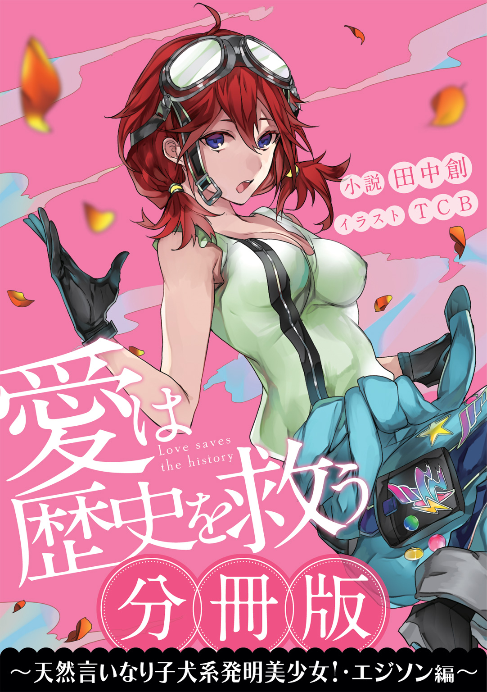

| ［分冊版］愛は歴史を救う～天然言いなり子犬系発明美少女！・エジソン編～ | |
| 田中創 | |

この本は縦書きでレイアウトされています。
また、ご覧になる機種により、表示の差が認められることがあります。


時震という言葉を知っていますか？
知らなくても無理はないと思います。普通のひとにとっては耳慣れない言葉でしょうから。
簡単に言うと、時震とは、歴史上のヒトやモノを変異させ、並行歴史を生み出す謎現象です。
ボクの技術でも、原因はいまだ解明できていません。しかもこの並行歴史が増えてしまうと、宇宙が崩壊するというのですから大変です。
愛する人との未来を守るため、早くなんとかしなければ。
その方法はひとつ。時空移動で過去の世界に赴き、変異した歴史を修正することです。
そうです。ボクたちＴＨＲ――航時局歴史管理課の使命は、まさにそれなのです。
愛するあのひとのためなら、ボクはメカニックとして全力を尽くします。ちょっとしたお役立ちアイテムから汎用人型決戦兵器まで、なんでも発明してみせる所存です。
そう思っているのはボクだけではないでしょう。ＴＨＲには頼れる仲間がいっぱいです。
ちょっとドジだけど、とっても可愛いフランス皇帝。ナポ子さん。
小さいのに何でも知ってるギリシャの哲学者。アリスさん。
なにかと暴走しがちだけど、強くてかっこいい武将。奉先さん。
みんなボクと同じで、時震の影響を受けた偉人少女ばかりです。
そしてＴＨＲで忘れちゃいけないのがあのひと――たいちょー、御戸ミツキさんですね。
真面目で優しくて、すごく素敵なお兄さんです。ボクがＴＨＲに籍を置いているのは、彼のためだと言っても過言ではありません。
たいちょーを想う女の子は他にも沢山いるでしょう。それは知っています。
ですが関係ありません。あのひとと一緒にいられることだけが、ボクの幸せなのです。
彼は果たして、時震の謎を解き明かすことが出来るのでしょうか。
あのひとの想いは、上司、フレドリカさんへと伝わるのでしょうか。
（後者はどうも望み薄な気がしますが......くじけないで頑張って欲しいです）。
それでは、ボクと彼の出会いのお話を始めましょう。
あの出会いは、まさに運命でした。
２０２０ 1021 航時局 レクリエーションルーム
1021 航時局 レクリエーションルーム
航時局ビルの上層フロアは、局員たちの居住スペースになっている。時震が観測された際に迅速な対応をするため、僕たちは本部で寝泊まりすることを義務づけられているのだ。
一般企業でいうところの、社員寮である。それが本社のビル内にあるというわけだ。
居住フロアには、局員の福利厚生のための施設もそれなりに充実しており、トレーニングルームや購買部、クソまずいナポリタンを出す喫茶店などが備えられている。
このレクリエーションルームもそのひとつ。
ビリヤード台やダーツボード、カラオケに各種ゲーム機などなど、娯楽用の設備が設置された空間である。暇つぶしにはもってこいの部屋というわけなのだ。
僕がレクリエーションルームに足を踏み入れると、少女の嗚咽が聞こえてきた。
「うううっ......!! ぐずっ」
誰かと思えば、奉先だ。なにやらこの武将娘、壁の大スクリーンを見つめながら、涙をこぼしているではないか。
「ポン太ああっ......!! 友達を庇って自ら犠牲になっちまうとは......立派なタヌキだったぜっ......!!」
スクリーンに映し出されていたのは、ほんわかした絵柄のアニメ映画だった。
なにやらデフォルメされたタヌキを主人公にした、感動系の作品らしい。ちょうどクライマックスのお涙頂戴シーンのようだ。
「奉先......こんな可愛い映画観て泣くキャラだっけ？」
「うるせえ。あたしは動物モノには弱いんだよ。赤兎のこと思い出しちまってな」
真っ赤に泣き腫らした目で、僕を睨みつける奉先。
そういやこの子、馬飼ってたんだっけ。初めて会ったとき、なんかやたらデカくて強そうな馬を乗り回していたけども。
「奉先さん、意外に中身は乙女ですからね。この映画はきっとツボにハマると思いました」
奉先の隣には、銀髪の哲学娘――アリスがいる。
なるほど、アリスが映画鑑賞に誘ったというわけか。
奉先がエージェントとして務め始めたのが今年の五月。
それからしばらく共に任務を重ねているうちに、アリスと奉先はずいぶん意気投合したようだ。偉人少女同士ということで、何かと気が合うのかもしれない。
ふたりとも元の世界では周囲に壁を作っていた時期があっただけに、こうした光景はなんだか感じ入るものがある。僕も身体を張った甲斐があったというものだ。
「映画って、すげえんだな」奉先がうんうん頷いている。「あたしらの時代の娯楽っていやあ、酒と狩猟ぐらいだったからな。こんだけひとを感動させられるモンが生まれているなんて、ホントいい世の中になったぜ」
「でしょう？ 現代人にとっては、映画はなくてはならない文化ですからね」
偉そうに言うアリスも紀元前の人間だったような気がするのだが......まあそれはいい。
「そんなことよりふたりとも、早く次の任務の準備をしてほしいんだけど」
「はあ、次の任務ですか」アリスが眉をひそめた。「すいません。私それパスで」
「いや、アリスさん。パスじゃなくてね？」
「この映画、まだ前編なんです。後編を観終わるまで席を立つわけにはいきません」
妙にキリっとした表情で言いきられてしまう。なんだと。
「後編......『発動篇』はですね、第六文明人の手により復活したポン太が、過ぎた力を有してしまった者の苦悩を抱えながら、憎しみに満ちた戦場を駆けるという壮絶なストーリーなんです。共に戦う森の仲間たちが、次々と散っていく悲惨なシーンの数々......これを観ずに、日本のＳＦアニメは語れませんねえ」
感動系の動物モノじゃなかったの、この映画......？
「ていうかさ。映画鑑賞のために任務をサボるって、それひどくない？」
ため息しか出てこなかった。この子のサボり＆引きこもり癖は今に始まったことじゃないけれども、最近ますます悪化している気がする。
「ねえ、奉先も何か言ってよ」
「すまん隊長さん。あたしも今回はパスだ」
奉先もまた、妙に真剣な顔で首を振っていた。
「ポン太の行く末が気になって、任務どころじゃねえからな」
「奉先まで何を......」
「どのみち、フレドリカ姐さんも言ってたじゃねえか。今回のは、ひとりでもなんとかなりそうな任務なんだろ？」
「それはまあ」しぶしぶ頷く。
「だったら、今回は隊長さんに任せるよ」
奉先は片手を振りつつ、手元のリモコンを操作し始めてしまった。続きを観る気満々らしい。
だめだこの子ら......。
「私たちが悪いわけじゃないんです。映画が面白いのが悪いんです」
〝いけしゃあしゃあ〟という形容詞は、まさにこの子のためにあるのではないか。そう思わせるほどに、アリスの態度はひとを苛立たせるものだった。
「恨むなら、映画を発明したひとを恨めばいいんじゃないですか」
「誰だよ、映画を発明したひとって......」
映画にドハマリ中の同僚たちに背を向け、僕は呆れ果てるしかなかった。
この子らに果たして、ＴＨＲのエージェントとしての自覚はあるのだろうか。改変された歴史の向こうでは、要救助者が今にも僕たちの助けを待っているというのに。
最悪を告げられた日
心臓がバクバク動いて、背中を冷たい汗が流れました。心なしか、意識が遠くなってきたような気さえします。
人間は心理的に激しいショックを受けたとき、そういった症状を起こすことがあるそうです。つらい現実を受け止めることに耐え切れず、心より先に身体が参ってしまうのだとか。
今のボクは、まさにそんな状態でした。
「え、ええとあの。おっしゃってる意味がよくわかりません......」
ここはニューヨークにある、とあるビルの最上階。
革張りのソファーやらマホガニーのデスクやら、成金趣味のインテリアに囲まれた社長室です。棚には、よくわからない黄金の像とか、きらきらした水晶のオブジェだとかがたくさん飾られていて、お金持ち感がバリバリ。
つい今しがたボクは、この部屋の主に呼ばれ、最終通告を受けたばかりのところでした。技術者としては、死刑にも等しい宣告を。
「ボ、ボクの研究室への投資を打ち切るって、どういうことですか......？」
呼吸を落ち着かせながら、ボクはなんとか口を開きました。
「どういうこともなにも、他意はないよ」
デスクに座った社長さんが、大きなお腹を揺らしながら「ほっほっほ」と笑います。
「今月いっぱいで、わが社と君の付き合いはおしまい。それだけの話だ」
このオジサンこそ、この部屋の主。Ｊ・Ｐ・モルガン社長です。
まるで季節外れのサンタクロースのような外見をしていますが、このひと、アメリカで一番の大富豪です。聞くところによれば、国家予算より多い資産を持っているとか。
彼はこの投資会社の社長さんで、ボクの研究にたくさんお金を出してくれているひとなのです。
あ......。いえ、間違えました。出してくれていたひとです。今や過去形です。
「あの。それは、困るんですけど......」おずおずと、ボクは口を開きます。「発明には、いっぱいお金がかかるんです。モルガンさんにお金を出してもらえないんじゃ、ボクは首をくくるしかなくなっちゃいます......」
「君の気持ちもわからないではないがね。トーマス・エジソン君」
おヒゲを撫でながら、モルガンさんが首を振ります。
「私が行っているのは人助けじゃない。ビジネスなんだ。投資をするのは、あくまで前途有望な若者だけ。将来我が社に確実な利益をもたらすだろう人間だけなんだよ」
「はあ......」
「だが残念ながら、君の存在はもはや不利益しか生まない。だから投資を打ち切る。単純な話だ」
「で、でも」
ボクはなんとか食い下がります。このままでは来月、パンも食べられません。
「こ、これまでだってボクは、たくさん発明をしてきたはずです......。モルガンさんにも、いっぱい貢献してきたはずですっ......」
故郷を出て数年、ボクは技術者として様々な発明をしてきました。
電信技術やプリンター、トースターにレコード。白熱電球や発電所。電気の送電システムなどなど。最初に蓄音機を発明したときには、大統領にも褒められたほどなんです。
このモルガンさんだって、昔はボクのことを「発明王」だって言ってくれていたはずなのに。どうして、こんなことになってしまったのでしょうか。
「でもねえ、エジソン君。今や世間じゃ君のこと、なんて言ってるのか知ってるかい？」
「え......？」
「〝人殺し〟だって。みんなそう言ってるんだよ」
その単語を聞いて、心が重く沈みます。
一部の心ないひとが、ボクをそう揶揄していることは知っていました。
もちろん、ボクが直接人を殺したわけじゃありません。ただ、ボクの発明が受け入れられていないだけなんです。
なんと反論したらいいかと悩んでいると、背後でドアが開く気配がありました。
「モルガンさん、お呼びかしら」
入ってきたのは、見覚えのある女の子です。
ボクよりも背が高くて綺麗で、煌びやかなブルーのドレスを着た女の子。
可愛らしく巻いた金髪を指先で弄びながら、彼女はボクに目を向けました。
「あら、来てたんですの。人殺しさん」
「テ、テスラちゃん......」
この女の子は、ニコラ・テスラちゃん。これまでのボク同様、モルガンさんの援助を受けている技術者です。
オーストリアの良家の出で、電磁技術関連のスペシャリスト。ラジオや無線技術、コイルや蛍光灯などの新発明を次々に成し遂げている天才技術者です。
世間のひとたちも、ボクと彼女を指して「宿命のライバル」だなんて表現していたこともありました。
ライバル......それも懐かしい響きです。今となっては、ずいぶん彼女に水をあけられてしまった感は否めません。「アメリカナンバーワンの発明家」と言えば、現在ではもう、このテスラちゃんを指すのが一般的になっていますから。
彼女の艶やかな口元が、うふふ、と歪みました。
「もしかしてあなた、また人を殺す道具を発明しようとしているんですの？」
「また、って......ボクは別に、そんなこと一度も......」
「でもお生憎様ね。さすがのモルガンさんも、もうあなたのような人殺しにはお金を出さないと思いますわよ」
ボクは思わずむっとして、首を振りました。
「で、電気椅子は、人殺しのための道具じゃないです......!!」
「そうかしら？」
「あれはその、悪いひとを怖がらせるためにある道具なんです。あの椅子を見て、みんなが悪いことはしちゃいけないって思ってくれれば、それで――」
「あらあら、綺麗事を」テスラちゃんが薄く笑います。「違いますわよね。あなたはあの残虐な発明にあたくしの技術を使って、テスラの名前を地に堕としたかっただけなんでしょう？ 『交流電流技術はこんなにも危険だ』ってね」
「ち、ちがっ......そんなつもりじゃ......」
ボクはまた、ぶんぶんと首を振ります。
ボクは純粋に、世の中のためになればいいと思って電気椅子を発明したのです。その中でテスラちゃんの技術を利用したのは、純粋にそれが有用なものだと思っただけ。
テスラちゃんの技術を貶めるためだとか、ましてや人殺しのためだとか、そういう目的で作ったわけじゃないんです。
なんとかうまく説明をしようとしたのですが、口下手なボクには難しいことでした。
助けて、ママ......。
「どのみち、君の評判は最悪だよ。エジソン君」
モルガンさんが、ふう、と息をつきます。
「電気椅子による処刑制度が決定されて数か月......。新聞社には毎日、君を糾弾する投書が次々と寄せられているそうだよ。『エジソンは血も涙もない』とか『あんなものを作った発明家を許すな』とかね」
「それは、よく知ってます......」
なんたってその手のお手紙は、ボクの研究所にもたくさん送られてきているのです。しかもご丁寧に、剃刀の刃とか同封されちゃって。
「正直、スポンサーである我が社にも、バッシングの一部が飛び火しているくらいなんだ。困るんだよね。イメージの悪い発明は」
「うう......すみません......」
「いいかいエジソン君。君はもうアメリカ中を敵に回したと言っても過言じゃない。そんな人間とはもう、私たちは付き合っていくことは出来ないんだ」
モルガンさんの冷たい言葉を、ぐっと下唇を嚙んで堪えます。
ボクに味方はいない。それは十分わかっていました。普通に道を歩いていても、殺人鬼だとか人殺しだとかって後ろ指をさされるくらいですから。
ただ......モルガンさんにまで愛想を尽かされたのは、さすがにショックでした。
だって彼は、長年良好な関係を築いてきたビジネスパートナーだったのです。少なくともこのひとだけは、ボクの味方になってくれると思っていたのに。
しかしどうやら現実は、ボクが思うよりも厳しかったようで。
「つまりモルガンさん、これまで彼女に投資していた分も、あたくしの研究室に回してくださるということですわね？」
テスラちゃんの言葉に、モルガンさんが「うむ」と頷きます。
「確か、大規模無線送電装置を作るのだったね。ウォーデンクリフ・タワーといったかな？」
「ええ。そうですわ」
テスラちゃんの微笑みは、大輪の薔薇のようでした。
「テスラ君の技術は、アメリカ中の役に立つものだからな。我が社としても、君を後援しているというだけで評判がよくなる。十分に支援させてもらうつもりだよ」
「ええ、期待していてください。このニコラ・テスラ、必ず御社に栄光をもたらしてご覧にいれますわ」
横目でボクを一瞥し、テスラちゃんがふっと笑みを浮かべます。
「――どこかの誰かさんとは違ってね」
「うう......」鼻の奥にこみあげる、熱いものを堪えます。
どうやらボクはもう、モルガンさんの支援を受けることが出来ないようです。彼の興味はすでに、テスラちゃんの発明に移ってしまったようですから。
つまりこれでボクは、来月以降、発明活動の一切を禁じられたに等しいというわけです。
「残念だったね、エジソン君」モルガンさんが眉尻を落とします。「だが、なにも発明だけが全てではないよ。君もまだ若いんだ。第二の人生を探すといい」
「そんな......」
「すまないが、話はこれで終わりだ。私はこれからテスラ君との打ち合わせがあるからね」
まるで出て行けと言わんばかりに、モルガンさんがボクから目を背けます。
なんとなく、わかってきました。
みんながみんな、ボクをこの世界から排斥しようとしている。研究者としてのボクの居場所など、もうこの世界のどこにもないのでしょう。ボクに出来たことといえば、項垂れながらすごすごと、この部屋から退室することだけでした。
去り際に、テスラちゃんに声をかけられました。
「これから業界から消えてしまうひとに、こんなことを言っても仕方ないのかもしれませんけれど――」
「え......？」
「ひとの役に立つ発明が出来ないんじゃ、発明家に生きている価値はなくてよ？」
運命の出会い
モルガンさんに支援打ち切りを言い渡されてから、一週間が経ちました。
「ひとの役に立つ発明って、なんなんでしょう......」
そんなことをぼんやりと考えながら、ボクは公園をゆっくりと歩いていました。
木々を揺らす夕方の風は爽やかで、こうして歩いていれば少しは気が晴れるかも......と、そう思ったからです。
先日、研究所が閉鎖しました。
金の切れ目が縁の切れ目というのでしょうか。スポンサーが離れると共に、これまで一緒に研究をしてきたスタッフのみなさんも、出て行ってしまったのです。
「エジソンさんについていっても、未来はありません」
直接言われたわけではありませんでしたが、みなさんの顔にはそうはっきり書いてありました。かなりショックです。悔しかったです。
こうなるともう、新しいことをしようという意欲も起こりませんでした。仕事も仲間も失ったボクには、こうして散歩することくらいしか暇をつぶす方法はなかったのです。
ため息をつきながら、橋の上をとぼとぼ歩きます。公園中央の池を横断するようにかけられた、古びた木製の橋です。
池の水面を、アヒルが優雅に泳いでいました。
アヒルは何の悩みもなさそうでいいなあ。ボクもアヒルに生まれたかったなあ......。
「あ」
そのときふと、前方に顔見知りを見かけました。
小さな男の子と、その母親らしき女性――。近所の雑貨屋さんの親子が、手を繋いでこちらの方へとやってきます。
息子さんは、美味しそうにバナナを頰張っていました。きっとおやつなのでしょう。なんだか微笑ましい光景です。
ボクは軽く会釈をしようとしたのですが、
「あ、ひとごろしだ!!」男の子がボクを見て、血相を変えました。「ねえママ、ひとごろしのお姉ちゃんがこっち見てるよ!!」
「こら!! 指さしちゃダメ!! 電気椅子の実験台にされちゃうわ!!」
母親は小声で息子に注意をすると、すぐさま踵を返します。そのまま彼女は息子の手を引っぱりながら、来た道を足早に歩き去ってしまいました。
ボクは「あはは......」と苦笑いを浮かべるしかありませんでした。
はい。そうです。よくあることです。最近のボクにとっては、日常茶飯事です。
「ひどいなあ......」
ふと、胸にこみ上げてくるものがありました。
ボクは、ボクなりに世の中をよくしようとしただけなんです。
それなのに、〝ひとごろし〟って。
「つらいなあ......」
ぐすり、と鼻の奥が鳴りました。
ボクにはもう、発明家としての未来はない。
モルガンさんとテスラちゃんがそう言っていました。実際その通りなのでしょう。ボクの発明はどうやら、ひとの役に立つものではなかったようですから。
しかし、未来がないのは、発明家としてだけではないのかもしれません。ボクにはもう、社会的な未来もないような気がしてなりませんでした。
ボクは人殺しなのです。アメリカ中の敵なのです。
「こんなとき、ママがいてくれれば......」
大好きだったママ。小さい頃から、ずっとボクを助けてくれたママ。
ママが生きていてくれれば、きっと今のボクを支えてくれたに違いありません。それならボクは、どんな困難にも立ち向かっていけるはずなのに。
「いっそ、ママのところに行った方がいいのかなあ」
そんなことすら考えてしまいます。
小さな頃から学校にも行かず、青春の全てを発明に注いできたのです。発明が出来なくなってしまうくらいならいっそ――と思ってしまうのは、おかしなことではないでしょう。
そんなネガティブ全開な精神状態だったせいでしょうか。ボクは、足下に落ちていたそれの存在に気がつかなかったのです。
「きゃあっ!?」
バナナの皮。たぶん、さっきの男の子が食べてたやつ。
足でバナナの皮を踏みつけてしまえば、つるんとすっ転ぶのは物理学的なお約束です。摩擦係数やら力学的エネルギーやらの計算式を持ち出すまでもなく、ボクの身体はあっけなく制御を失ってしまったのでした。
しかも、転んだ場所が悪かった。そうです。ここはちょうど橋の上。
古びた欄干はよろけたボクの身体を支えきれず、あっけなく折れてしまいました。
はい。そのまま池の中にドボンです。
「ひゃああぷっ......!?」
冷たい!!
慌ててもがいてみたのですが、なぜか身体は沈んでいくばかり。
そうでした。ボク、泳げませんでした。子供の頃からカナヅチだったのです。
ああ......こんなことなら、小学校で水泳の授業を受けておくべきだったのでしょうか。あるいは、『着ていれば絶対に溺れない衣類』を発明しておくとか。
なんて、今更後悔してもあとの祭りですけど。
せめて水底に足がつけばよかったのですが、どれだけ沈んでもその気配はありません。
おそらく、池というよりは沼に近いものだったのでしょう。どこまでも底がなさそうな感じでした。
沈んで、沈んで。すごく怖くて。
「んーっ......んん――っ......!!」
水の中では、息が出来ません。当たり前です。
苦しい。つらい。
このままいなくなっちゃえばいいなんて、そんなことを考えていたのがバカらしくなるほど、ボクの身体は痛切に酸素を欲していました。
でも、水面はもう遙か上方。どうしようもありません。
「ごぼっ」と水を飲みこんでしまったのが運の尽きでした。喉が痛くて苦しくて、ボクの意識は真っ暗な方へと引きずりこまれてしまったのです。
バナナの皮で滑って溺死だなんて、そんなのいやだ。助けてママ――!!
そう願ったボクが最後に感じたのは、この腕を引っ張りあげようとする、誰かの手のひらの感触でした。
ママの手と同じくらいに、温かいぬくもり。
「......んんっ......げほっ!!」
突然胸のあたりに感じた衝撃で、ボクの意識は覚醒しました。
ぎゅっぎゅっと何度も、強い力で胸を繰り返し圧迫されているようです。
い、痛たたた!? な、なにこれ!?
「ね、ねえキミ、大丈夫!?」
耳元で、そんな声が囁かれます。どこか頼りないけれど、優しい男のひとの声。
「い、今すぐ助けるから!! ええっと、次は人工呼吸を――」
「ふむうっ!?」
突然、口を何かで塞がれる感触がありました。
いったいなんなのでしょう。温かくて、ちょっと柔らかい。
ついで、ふうっと喉の奥に空気が送りこまれる感触があって、初めてボクは自分が人工呼吸をされているということに気がついたのです。
「ふ、ふむううう、ふみゅぎゅううう!!」
ビックリです。マウス・トゥ・マウスです。
他人と唇を触れ合わせるなど、生まれて初めての体験でした。電気椅子なんて目じゃないくらいの激しいショックが、ボクの身体を貫いたのです。
これって、キ、キス......!?
思わず目をぱっちりと開けると、
「あ、よかった......!! 気がついた？」
男のひとと目が合います。
ボクよりも、ちょっと年上くらいでしょうか。お兄さん、という印象です。
おっとりした顔立ちに、優しそうな眼差し。少し長めの黒髪は、かっこいいというよりは可愛らしい感じです。背もさほど高くなく、他の男のひとのように怖い感じはありません。
髪も服もびしょ濡れでしたが、どうやらそれはボクも同じでした。
「ごほっ、けほっ......!!」
むせるボクの背を起こしながら、お兄さんが微笑みます。
「意識がなかったから一時はどうなることかと思ったけど......。ほんとよかったよ」
「え、ええと......？」
「キミ、この池で溺れてたんだよ？ それは覚えてる？」
ボクはこくりと頷きながら、
「あの、あなたは......？」
「あ、僕は御戸ミツキっていうんだけど」お兄さんがにっこりと笑います。「キミはエジソンちゃんだよね？ トーマス・アルバ・エジソンちゃん」
「え？ あ、は、はい......」
どうしてこのひと、ボクの名前を......？
「そっか。よかった。それじゃ、これにて任務は完了かな」
どうやら、このひとがボクを助けてくれたらしいです。溺れたボクを岸まで引き上げて、こうして人工呼吸もしてくれて。
普通のひとにはなかなか出来ることじゃありません。
「あ、そ、その。ありがとうございます......。このご恩は一生......」
「いやいや、気にしないでよ」お兄さんが手を振りました。「なんていうのかな。こういう人助けみたいなことをするのも、僕の仕事だからさ」
お兄さんが説明するところによれば、彼はＴＨＲなる組織の人間らしいです。ずうっと未来の世界から、時を超えてやってきたんだとか。
驚きました。ビックリでした。話を聞きながら「ふわあ」と声を上げてしまったくらいでした。
もっとも、時を超えるという話自体はそこまで荒唐無稽なものでもありません。タイムマシンの基礎理論くらいなら、ボクだっていくつか思いついていたくらいですし。
それよりもボクを驚愕させたのは、このひとが、わざわざボクなんかを助けに来てくれたということの方です。
なんたってボクは今や〝人殺し〟ですから。
合衆国中から総スカンを食らっているボクを、何の役にも立たない発明家を。
このお兄さんは、身を挺して助けてくれたのです。
なんだか身体の芯が、じぃん、と熱くなる感覚がありました。
「どっか痛いところとかはない？ 水はそんなに飲んでなかったみたいだけど......転んだときに足首捻ったりとかしてたら大変だもんね」
お兄さんの優しげな眼差しが、心配そうにボクを見つめます。
とくん、と胸の奥が鳴りました。ぽうっと、頭の中が熱くなりました。
なんなんでしょう、この変な感じ。蓄音機を発明したときも、白熱電球を発明したときも、ここまで胸がドキドキすることはありませんでした。
ねえママ、ボクは変になっちゃったんでしょうか......？
気づけばボクは、お兄さんの袖口をぎゅっと握ってしまっていたのです。
「あ、あの......」
「え？」お兄さんが首を傾げます。
「ちょっと変な気分です。身体が熱くて、鼓動が速くなってて......」
「ど、どうしたの？ やっぱり体調悪くなっちゃった？」
そう言いながらお兄さんは、ボクの額に手を置きます。
濡れていて冷たいはずなのに、なぜかすごく温かい、男の子の手のひら――。
「熱は......ないよね」
そんな風に呟く彼の顔を見ているうちに、ボクはとある事実に気づいてしまいました。
昔ママが教えてくれたこと。女の子なら誰でも一度は経験する、甘酸っぱい気持ち。
このまま研究と発明だけで生涯を終えると思っていたボクが、そんな気持ちを抱いてしまうというのは思いも寄らぬことでした。
「お、お兄さんっ......」
「はい？」
とくんとくんと高鳴る鼓動。茹であがるように熱い頭の中。
すーはーと呼吸を整えながら、ボクは言い放ちました。
「好きです。ボクと結婚してくださいっ......!!」
１８８８７７ アメリカ ウェストオレンジ 州立公園
「え」
僕――御戸ミツキに出来たのは、ぽかんと口を半開きにすることだけだった。
だって、ねえ？
まさか今日出会ったばかりの女の子に、いきなり求婚されてしまうだなんて。こんな超展開に度肝を抜かれない青少年がいるだろうか。
「あ、あの、その......いきなりで驚いたとは思うんですけど、どうやらボク、お兄さんに、その、ひ、一目惚れしちゃったみたいで――」
僕の腕の中で頰を染めているのは、トーマス・アルバ・エジソンちゃん。
偉人少女の例に漏れず、この子もまた、とってもチャーミングな女の子だった。
しかもなんだろう。水に濡れてしまっているせいで、妙にビジュアル的エロスを感じる。
おさげの赤い髪はしっとりと首筋にはりつき、着ていた白いワンピースも細い身体のラインを浮き彫りにしてしまっている。ふっくらした胸も、丸みを帯びたお尻も、全部丸わかりだった。
ごくり。ついつい生唾を飲みこんでしまう。
大人しそうに見えて、なかなかのスタイルの持ち主である。華奢に見えて、出るところは出ているというか。ぷるんとしたその美乳も、ＤとかＥとかそのくらいはありそう。
さすがアメリカ娘。これが世に言うアメリカンドリームというやつなのか......？
そうやってワンピースの胸元を凝視していたら、不意に「お兄さん？」と声をかけられてしまった。
「は、はいごめんなさい僕は何も見てません!!」
「え？」
よくわかっていないようで、エジソンちゃんは首を傾げていた。
セーフ。ミツキくんの紳士的イメージは保たれたはず。
誤魔化し半分に、僕は「とにかく」と口を開いた。
「その、一目惚れって......？」
「ひ、一目惚れは一目惚れです......。ボクがお兄さんに、ぞっこんラブになっちゃったということです」
「じょ、冗談とかじゃなくて？」
「はい」エジソンちゃんは真剣な表情だった。「その、きっと運命だと思うのです。ボクはたぶん、お兄さんと出会うために生まれてきたと言っても過言じゃありません......!!」
そんな一途で可愛らしい告白には、僕のハートも思わずバックバク。
だが落ち着けミツキ。こんな出来すぎな話が本当にあるのか。
こんなキュートな子に、出会った瞬間告白をされてしまうなんて......アリスが観てるような萌え系深夜アニメじゃあるまいし。
まさか変な壺売りつけられたりしないよね？
僕が訝しんでいると、エジソンちゃんはこちらの手を取り、
「こ、この胸のドキドキ、確かめてみてくださいっ......!!」
なんとそのまま、自らの胸元へと導いたではないか。
「んん!?」
手のひらに感じる、ふんわりソフトな膨らみの感触......。ザ・おっぱい!!
「ど、ドキドキしてます、よね......」
「あ、は、はい」
むしろ僕の方がドキドキしてしまっていたので、正直よくわからなかった。
まさかいきなりパイタッチをさせられてしまうとは......この子、本気だ。本気で僕に一目惚れをしている......!! 現実は萌えアニメより奇なり、ということなのか？
「あ、あのね。エジソンちゃん」
「あ、その、出来れば『アル』って呼んでもらえると嬉しいですー......」
にこりと目を細める、トーマス・アルバ・エジソンちゃん。
「昔から家族にはアルと呼ばれていたので......これから家族になるひとには、そう呼んでもらいたいなあって」
「か、家族ですか」
ずいぶん気の早い話である。まだ僕が返事もしていないうちに、いきなり入籍を前提に話を進めてくるとは......。慎ましそうに見えて、これは侮れない。
「じゃあ、えっと、アルちゃん」
「なんですか、あなた？」
彼女――アルちゃんがにっこりと頰を染める。あなたって、なに。
「いやあの、アルちゃんは発明王なんだよね？」
「まあ......昔はそう呼ぶひともいましたが......」
なぜかアルちゃんは声のトーンを落としてしまったが、構わずに僕は続ける。
「ともかく恋愛とか結婚とか、そういうのは然るべきときにした方がいいんじゃないの？」
「然るべき時？」
「や、ほら。出会ったばかりの未来人なんかとホイホイ結婚するのはどうかと思うんだよ。キミにはもっと大事なことがあるでしょ？」
僕の言葉を遮るようにして、アルちゃんが首を振った。
「大事なことなんて......ないです」
「え」
「ボク、もう発明はやめたんです。スポンサーさんもいなくなっちゃいましたし、研究所も閉鎖しちゃいましたし」
アルちゃんが語り始めたのは、彼女を取り巻く、あまり好ましくない近況だった。
なんでも、電気椅子を発明したことによる悪評がきっかけで、アルちゃんは仕事を続けるのが困難になってしまったらしい。
彼女の話を聞いて、僕は「ううむ」と首を捻る。
これもまた、時震の影響で歴史が変わったということなのだろうか。発明王エジソンが発明をやめたなんて話、聞いたことがない。
「考えてもよくわからんな......」
とりあえず、ＴＨＲに与えられたミッションは完了した。
今回の任務は、「溺れかけたエジソンを救助すること」である。こうして彼女を助けた時点でもう歴史変異率の上昇は止まっており、任務は終了している。それ以外の困り事に首をつっこむ義理はないのだ。
正直、この場で時空移動アプリを起動して現代に帰っても全然問題ないだろう。
「でもなあ......」
これだけ困った顔をしている女の子を放って帰るというのも、なんだかねえ？
僕が首を捻っていると、アルちゃんがぎゅっとこちらの袖をつかんできた。
「なにか悩んでらっしゃるようですが......。もしかしてお兄さんには、もうお相手がいるのですか......？」
「お、お相手？」
「恋人とか奥さんとか......そういう心に決めたひとが」
アルちゃんの眼差しは、まるで捨てられた子犬である。
こういう子に真実を告げるのは、実に忍びない。それでも僕は、口を開くしかないのだ。
「いや、恋人も奥さんもいないけど......その、将来的にそうなりたいと思うひとはいるよ」
僕を救ってくれたひと。高嶺フレドリカさん。
いかにアルちゃんが可愛くて魅力的な女の子でも、さすがにフレドリカさんを裏切るわけにはいかない。結婚なんて出来るわけがないのだ。
「だからごめんね、アルちゃん。僕は、キミの気持ちに応えることが出来ないんだよ」
「そ、そうなんですか......」
それだけ呟いて、彼女はしゅん、と俯いてしまう。
いろいろあって弱っている子の想いを拒むのは、正直心苦しい。
でもだからって、噓をついてまで優しくするというのも、なんだか違うと思うのだ。はっきりと誠実にお断りするのも、優しさというものだろう。
「まあ、その、そういうわけで、僕はそろそろ帰るから......」
じゃあね、と立ち上がろうとしたのだが、なぜかアルちゃんは袖を放してくれない。
「ま、待ってくださいっ......!!」
「え」
「お、お兄さんに好きなひとがいても、ボクは全然構わないですっ......!! 二番目でも、三番目でも四番目でもいいんですっ......!! 結婚がダメなら......愛人にしてくださいっ!!」
「ええええ!?」
結婚の次は愛人ときた。これには僕も開いた口が塞がらない。
「キ、キミ、とんでもなくアグレッシブだね......今日初めて会ったばっかりなのに」
「恋愛は一パーセントの直感と、九十九パーセントの努力と言いますから」
「それなんか違う!?」
エジソンぽい名言かと思いきや、まったく方向性の違う何かだった。
「たとえお兄さんが、ボクのことを好きじゃなくても、全然いいんです。ボクみたいな役立たずを助けてくれたお兄さんのために、全てを捧げたい。それだけで本望なんです」
「や、さすがに発明王が恋愛に全てを捧げちゃうのはマズいんじゃ......」
「いいんです」アルちゃんが、うっとりとした表情で微笑んだ。「第二の人生を歩んだ方がいいってモルガンさんも言ってましたし......。ボク、発明家やめてお兄さんの愛人になります。ここで今日助けられたのも、神様の思し召しに違いないと思うのです」
「か、神様の思し召し......」
この子とんでもないこと言うなあ。思いこんだら一直線というか。
どんだけ説得しても無駄だというオーラを、全身からひしひし漂わせている。
発明家には変わったひとが多いとは思っていたが、この発明王ちゃんは斜め上を行く感性の持ち主だった。いわゆる紙一重系である。
濡れた内股をもじもじとこすり合わせながら、アルちゃんが言う。
「ボクはもう、お兄さんのものです。所有物です......。す、好きなことをしていただいて、全然構わないです......」
「す、好きなことって、ここ思いきり野外だよ!?」
なんか、違う意味で心配になってきた。このまま放置して帰るわけにはいかない気がする。
どうしたものだろうと僕が頭を捻っていると、
「へっくち」
アルちゃんが可愛らしいクシャミをする。暖かい陽気でも、さすがに濡れたままでは冷えるだろう。
「じゃあアルちゃん。一個だけ提案をさせてもらうけど」
「は、はいお兄さん。なんなりと」
「とりあえずお家に帰って、その服を着替えた方がいいんじゃないかな......」
１８８８７７ エジソンＧＥ ダイニング
とんとんとん。まな板を叩く包丁の音が、キッチンから響いてくる。
「お、お夕飯はもうすぐ出来ますから......お兄さんはゆっくり待っていてくださいね」
エプロン姿のアルちゃんが、屈託なく笑う。
僕は「うん」と頷き、椅子に腰を下ろした。
この建物は、エジソン・ゼネラル・エレクトリック。アルちゃんの研究所兼居住用スペースらしい。
さすが発明王の城というだけあって、建物自体かなり大きい。ぱっと見、航時局のビルくらいはある。いっそ、工場といっても差し支えないレベルだろう。
別棟になっているこの居住スペースも、かなり広々している。四、五人くらいの家族がゆったり暮らせる感じだった。
大型の冷蔵庫に電子レンジ、全自動食器洗い機――キッチンを見渡せば、ここが十九世紀であることを忘れるほどの文化的な家電が揃っている。アルちゃんによれば、「全部手作り」らしい。さすがは〝発明〟の才能を持った偉人ということか。
総じて、僕が住んでいる航時局の寮が霞んで見えるほどの、すばらしい生活空間だった。
フライパンの柄を握りながら、アルちゃんがこちらを振り返る。
「こ、こうしてると、なんだか新婚さんみたいですねー......」
「そ、そうかもね」
濡れた服を乾かすついでに、ぜひ、ボクのお家でお礼をさせてください――先ほど公園で、アルちゃんにそう誘われたのである。
せっかくの誘いだ。フレドリカさんにも長年「女の子の好意は素直に受け取るんだよ」と言われていることだし、僕は紳士らしく素直に承諾することにした。
結婚やら愛人やらという話は、ひとまず脇に置いておくことにして。
そういうわけで僕は、こうして研究員用の作業服をお借りして、彼女の家のダイニングにお邪魔させてもらっているのである。
なんとアルちゃんは、僕に手料理をご馳走してくれるつもりらしい。
「愛しの旦那様が、ボクの作るお夕飯を今か今かと待ちわびている......。なんだか、恥ずかしいシチュエーションですねー......」
そんなことを言いながら、アルちゃんは「きゃっ」と頰を赤らめていた。
それはそれで、確かに可愛らしい仕草なのだが。
「そんなことより、キミにはもっと他に恥ずかしがるべきところがあると思うよ？」
「え......？ なんですか？」
「その格好だよ!! なんで裸エプロンなのさ!?」
思わず、声を荒らげてしまった。
そうなのだ。濡れた服を着替えることにしたのはいいのだが、この発明王ちゃん、とんでもない格好で僕の前に現れたのである。
全裸の上にエプロンを身につけただけという、あられもない姿で。
「えっと......変ですか？」
「変だよ!? 思いっきり変だよ!! なにが変って、初対面の男の前でいきなりそんな過激な格好しちゃうキミの感性が変だよ!?」
アルちゃんが、きょとん、と首を傾げる。
彼女の身体を包むのは、たった一枚の頼りない薄布。
その白くて小さな背中は妙に犯罪的だし、露になった小振りなお尻も実に悩ましい。脇からチラチラ覗く丸い膨らみなんて、いっそ裸よりも数段エッチなくらいではないか。
「いくらなんでもハレンチすぎる!!」
「じゃあ今日からボクは、発明王改めハレンチ王ということでー......」
「意味がわからない!!」
「す、好きなひとの前でなら、女の子はどこまでもハレンチになれるんです......」
暖簾に腕押し。アルちゃんの微笑みはまったく崩れなかった。
「ボクがお兄さんに出来ることなんて、こうして身体を捧げることぐらいですから......。少しでも興奮してもらえるなら、それでいいんです」
確かに興奮してるけど!!
Ｊｒ．なんてもう、ズボンの中でガッチガチのアストロン状態だけど!!
「そういう問題じゃなくて、もっと自分を大切に――」
「はっ!?」アルちゃんが息を呑む。「もしかしてお兄さん、裸エプロンごときじゃ興奮しませんか？ いっそ、裸バンソーコーの方がよかったですか!?」
裸バンソーコー......それは局部にバンソーコーを張り付けただけという、とてつもなくエロティックな格好である。人前で晒したら、一発タイホ間違いなしの姿だ。
こんなに愛らしいアルちゃんが、そんなヘンタイじみた格好をしてしまったら......僕の愚息がどうなってしまうかわからないではないか。
慌ててエプロンを外そうとするアルちゃんを「待った!!」と制止する。
「そ、そのままでいいから!! 裸エプロン、僕大好きだから!!」
「そうですか......」アルちゃんはなぜか少し残念そうだった。「あの、ボク、お兄さんの趣味にはなんでも付き合いますから......。ネコ耳でもブルマーでも赤ランドセルでも、なんでも言ってくだされば身につけますのでー......」
「なんでこの時代にそんなニッチなアイテム類が」
「いろいろ発明しましたから」にこりと笑うアルちゃん。
「そういうのも発明の範疇に入るんだ......。すさまじいね、発明王って」
「えへへ、お兄さんに褒めてもらえるのは嬉しいです」
「いや、褒めてないよ？」
可愛い女の子に好意を向けられるというのは、ふつう悪い気はしないはずである。
しかしなぜだろう、アルちゃんの場合、それが素直に喜べなかった。方向性が突飛すぎて、いろいろと心配になってしまうのである。
どうして彼女はこんなに、僕に積極的なアプローチを繰り返すのだろうか。
最初は仕事がうまくいかなくて自暴自棄になっているのかとも思ったのだが、どうやらそうではないような気がする。ナチュラルボーンで変な子なのかも......。
僕がため息をついていると、
「で、出来ましたよ。お兄さん。お夕飯です」
アルちゃんが、僕の前のテーブルにお皿を置いた。
その瞬間、つん、と鼻にくる刺激臭。明らかに焦げついたタンパク質の匂い。
皿に盛りつけられていた物体を目にして、僕は思わず「え」と目を丸くする。
「あの、これ......なに？」
「なにって、ソーセージですけど......」
それはソーセージ......とは、まったくもって言い難い、謎の黒い塊だった。
「アル特製、炭火焼きソーセージです」
「炭火焼きっていうか、ただの炭？」
どれだけ強火力を加えれば、こんな有様になるのだろう。完全に炭化してしまっているのか、端の部分からボロボロと形が崩れてしまっている。
「まあその、実はボク、お料理というものにはまだまだ慣れていないもので......ちょっと失敗しちゃった感はありますねー......」
「いや、ちょっとどころかこれ、まごうことなき大失敗だと思うよ？」
アルちゃんいわく、ついこないだまでは母親が彼女の身の回りの世話を全部していてくれたらしい。その母親を亡くし、ひとり暮らしを始めたばかりなのだそうだ。
ひとり暮らし初心者ならまあ、お料理が出来なくても仕方ないかもしれない。
「研究所が閉鎖しちゃったので、ハウスメイドさんも雇えませんし......。これからはボクひとりで生活が出来るように、いろいろ頑張っているところなんです」
「頑張っている、ねえ......」
炭ソーセージを見下ろし、僕は眉をひそめる。
料理もまともに出来ない女の子が、果たしてひとり暮らしなど出来るのだろうか。
せっかく溺れているところを助けたのに、このままじゃ野垂れ死んでしまう可能性もある。いろいろと心配の種の尽きない女の子だった。
「だ、大丈夫です」アルちゃんがぎゅっと拳を握る。「失敗は成功の母です。これ、ボクの持論です」
「そりゃまあ、いい言葉だとは思うけど」
この炭ソーセージがまともな成功料理に進化するまでに、いったい何年かかることやら。
僕の内心の不安を見て取ったのか、アルちゃんが「心配無用です」と首を振る。
「料理は出来なくても、ボクには〝発明〟がありますから......」
「え」と戸惑う僕をよそに、彼女は炭ソーセージの載った皿を持ち上げる。そしてそのまま、ダイニングの出入り口へと向かうではないか。
「ど、どこ行くの」
「ちょっと改造してきます」
改造......？
およそ料理の始末にはふさわしくない物騒な単語を残し、彼女は部屋をとてとて出ていってしまった。
研究所の方に向かったのだろうか。ややあって、ちゅいーん、とか、どかんどかん、とか金属を加工するような音が断続的に聞こえてくる。
何の音だろう、これ。
妙な不安に胸を苛まれながら、座して待つことおよそ五分、
「で、出来ました」
何かをやり遂げたような晴れがましい表情で、アルちゃんが部屋に戻ってきた。
彼女が手に持しているのは、先ほどのソーセージのお皿。
「どうぞ」とそれを差し出され、僕は目を丸くする。
皿の上に載っていたのは炭の塊ではなく、肉汁がしたたりそうほどに色よく焼けた、ジューシーなソーセージであった。いったい何の魔法がかけられたのか。「三つ星シェフが手がけた匠の一品」と言われても信じてしまいそうな出来映えである。
「ええと、これが改造......？」
「正確に言えば、改造用のアイテムを製作したんですー......」
アルちゃんが、懐から小瓶のようなものを取り出した。
「どんな失敗料理でも、ひと振りで究極かつ至高の味に変えてしまう......そんな万能調味料です。名づけて『カイバラまっしぐら』と言いまして」
「美食倶楽部も真っ青!?」
思わず閉口してしまう。
振りかけただけで消し炭をまともな肉料理にしてしまうとは......おそるべき調味料だった。原理がさっぱりわからないあたり、天才の所業と言わざるを得ない。
さすが発明王。料理を作り直すんじゃなくて、発明によって料理を改造してしまうとは。その発想はなかった。これも時震がもたらした才能なのだろうか。
「ていうかアルちゃん、そんな便利なものが作れるなら、これからいくらでも儲けられるだろうに」
「そうでもないんです......」発明王ちゃんが残念そうに首を振る。「この調味料、作るのにちょっと特殊な製法が必要だったので......量産は難しいです。かなりのコストがかかると思います」
「コストって、どのくらい？」
「そうですねえ」首を傾げるアルちゃん。「工場の設備を整えたり、貴重な材料や技術者を山ほど集めなければならないので......、もろもろ込みで、自由の女神を建てるのと同じくらいのお金は必要かと......」
「うわーお」
よくわからないけれど、何千万とか何億円とか、そのくらいのとんでもないお値段になりそうだ。よほどお金持ちがバックについていないと、量産は無理だろう。
「ボクの発明はだいたいこんな感じなので、基本的には役立たずなんです......」
アルちゃんが肩を落としてしまう。
「たまに安い材料で作れる発明品を思いついたとしても、今度は人殺しの道具呼ばわりされちゃったりしますし......。ままならないものなのです」
例の電気椅子の話だろうか。
時震によって才能が強化されたとしても、それがすなわち自分の利益になるわけではない。これまで、僕が何度も出会ってきたケースである。
「出資者さんもいなくなっちゃいましたし、今後ボクが商業ベースの発明をすることはまず無理そうですねー......」
「そんな......せっかくこんなすごい才能があるのに」
ソーセージに目を落とし、僕は嘆息する。こんな魔法みたいなアイテムが作れる才能を有しているというのに、それを生かせないなんて可哀相な話だ。
「才能があっても、みんなに受け入れられなければ意味がありません」
アルちゃんが自嘲気味に笑う。
「知り合いの技術者の子も言ってました。『ひとの役に立つ発明が出来なければ、発明家に生きている価値はない』って......。そのとおりだと思います。ボクの才能には、意味なんてないんです」
「アルちゃん......」
「もうボク、みんなのための発明はしません。このまま、この研究所でひっそり、朽ち果てようかと思っています」
アルちゃんが、寂しそうな顔で俯いてしまった。
ちょっと変な子だけど、悪い子ではないのだ。一生懸命、僕のために頑張ろうとしてくれていること自体は嬉しいし。
このまま放っておいたらいろいろ心配である。やはりアフターケアが必要だろう。
だから僕は、彼女を見つめて告げた。
「あのさ、アルちゃん」
「はい......？」
「よければ少しの間、ここにいさせてもらってもいいかな」
「えっ!?」アルちゃんの顔が、いっぺんに華やいだ。「お、お、お兄さん、ボクと一緒に暮らしてくれるんですか!? それってつまり、ど、同棲生活っていうことですか......!?」
「いや、その手のラブ的なアレじゃないよ？ ひとりで暮らすの大変そうだから、ちょっとお手伝いしようかと思っただけで」
もちろん、そういう建前もあるけれども。
出来れば彼女には、もっと前向きに自分の才能と向き合ってほしい。ちゃんと発明家としての自信を取り戻してほしい。そのための手助けをするというのが、今回の追加ミッションだ。
「困ってるひとを助けるのが僕のお仕事だからね。あくまでお仕事ということで」
「わかってます......。少しの間でもお兄さんといられるだけで......嬉しいです......」
アルちゃんは、まるで感極まったように目を潤ませている。そんなに感激されると、僕まで嬉しくなってしまうではないか。
アルちゃんが突然、びしりと敬礼をしつつ、
「で、ではさっそくボク、シャワーなど浴びてきますっ......!!」
「え」
「今夜はどこを責められてもいいように、しっかり身体を清めておきますので......」
「ちょっと待って!? やっぱりキミ何にもわかってないよね!?」
アルちゃんの積極的な攻勢に対し、果たして僕は理性を保つことが出来るのか。これはまた、なかなかに困難なミッションなのかもしれない。
１８８８７10 ニューヨーク ブロードウェイ タイムズスクエア
マンハッタンを南北に貫く、ニューヨーク最大の繁華街。それがブロードウェイである。
通りには百貨店や劇場などの大きな建物が立ち並び、街灯が夜の闇を煌々と照らし出していた。通行人の数も、現代の大都市と遜色ないくらいである。
キラキラと輝くようなメインストリートを見ていると、思わず感嘆の息が漏れてしまう。ここ、本当に百年以上も昔の世界なんですか、って具合に。
「つい数年前までは、ここももう少しは落ち着いた街だったんですけどね」
僕の腕に抱きつくようにして歩きながら、アルちゃんが口を開いた。
「ボクが電球を作って以来、だいぶ様変わりしちゃって」
「なるほど......。そういえば、エジソンといえば電気だもんね」
世界を電気の光で照らした発明王、トーマス・アルバ・エジソン。
今、僕の右腕にくっついているこの女の子は、何を隠そう人類の歴史を変えてしまった偉人なのだ。なんだか、そんな実感はあまり湧かないけれども。
「そんなに大したことではないんですけどね」
アルちゃんが複雑な表情で頰を搔いた。
「電球も発電所も送電システムも、研究所を便利にするために作っただけなんです。街のひとたちに提供したのはホントついでみたいなものだったので......ここまで発展するとは思いもよりませんでした」
「ははあ......それでニューヨークは、世界最大の眠らない街になった、と」
街の様子を横目に眺めながら、僕は素直に感心してしまう。
なにもこの街だけではない。東京だってロンドンだって香港だって......世界中の都市が、電気のおかげで発展を遂げたのだ。それが「ついで」だろうとなんだろうと、人類の文化レベルを引き上げたのは事実であり、間違いなくこの少女の功績なのである。
「アルちゃんは本当にすごいなあ」
「え？ すごい、ですか」
「こんなに可愛い女の子なのに、発明で世界を変えちゃったんだから」
「そ、そんなことは......別にボクなんか、可愛くないですよ？」
アルちゃんの頰が真っ赤に染まる。彼女には、「可愛い」という部分しか耳に入っていなかったらしい。
今日の彼女は、ピンクのノースリーブワンピースに、大きな白いつばの帽子を合わせたスタイル。帽子の白と赤いおさげが、絶妙なコントラストを演出している。派手すぎず地味すぎず、彼女に似合った清楚で夏らしい格好だった。
まあ、可愛いのは疑いようもない事実なんだけど。
「しかし、今日はまたバッチリ決めてきたよね」
「は、はい......」アルちゃんが頰を緩める。「だってこれ、勝負服ですし」
「勝負服？」
「そりゃあボクだって、いちおう女の子ですから......。好きなひとにデートに誘われれば、気合いくらい入ります」
ぐっと拳を握り、アルちゃんが続ける。
「それでお兄さん、どこ行きますか？ ホテルですか？ 公園ですか......？ べ、別にボクは、そこらの路地裏とかでもいいですけど......」
なんだそのラインナップ。アルちゃん、いったいキミは何を望んでいるんだ。
「あの、そもそもデートじゃなくて、これ単なる買い出しなんだけど」
「買い出しという名のデート、ですよね」
相変わらず、なかなか強情な発明王ちゃんである。
僕が彼女と一緒に生活を始めてから、すでに数日が経過していた。
彼女に発明家としての自信を取り戻してもらうにはどうすればいいのか。
答えは実に単純だ。新たな発明を発表して、みんなに認めてもらう。これに尽きる。
そのために僕に出来ることといえば、彼女を研究所から外に連れ出し、発明家としてのインスピレーションを刺激してやることくらいのものだろう。
そこで今日は気晴らしがてら、服や食料品など、生活物資の買い出しという名目で彼女を繁華街に連れてきたのである。
近所を避け、わざわざこうして都会に遠出してみたのは、ご近所さんの目を避けるためだ。知り合いにいろいろ揶揄されてしまったら、発明のテンションも上がらないだろうし。
「それで」歩きながら、僕は口を開いた。「アルちゃん。何か思いついたりしない？ 新発明の構想とか」
「新発明......？ え、なんですか急に」
あらら。発明王ちゃん、きょとん、と首を傾げてしまいましたよ。
「ボク、発明はもうやめたんですよ？ 何も思いつくわけないです」
「そ、そうなんだ」苦笑いするしかなかった。
ううむ。やっぱり、問題の根は深い。
世界を変えるような発明王なら、すぐに何か閃いてくれると思ったのだが......そういうわけでもないらしい。ちょっとばかり気分転換したくらいじゃ、おいそれと発明に向き合うつもりにはならないようだ。
「アルちゃんって、小さい頃からこれまでずっと研究に打ちこんでたんだよね？」
「まあ、そうですねえ......。今となってはずいぶん無駄な時間を過ごしたと思います」
無駄な時間ときたか。
「そ、それならさ。なんかこう、『新しいものを作ってみたいなあ』とか思ったりとかはしないの？ 子供の頃からの習慣って、なかなか抜けないもんだし」
「別に思いませんけど」即答だった。「今はその、お兄さんとのデートを楽しむ方が、ボクにとっては優先事項ですから......」
ぽわんと浮かれたような表情で、僕を見上げるアルちゃん。
ダメだこりゃ......。嬉しいやら悲しいやら、この子にやる気を取り戻させるのは、一筋縄ではいかないようだった。
アルちゃんは「あ」と口を開く。
「そう言えばひとつだけ、作ってみたいもの、ありました」
「え？」
「赤ちゃん......。お兄さんとの赤ちゃん、作ってみたいです」
そんなことを真顔で言い放ってしまうのだからビックリである。
「ちょ、ちょっとアルちゃん!? 何言ってんの!?」
「その、ボクの方はいつでも準備は出来ておりますので......。お兄さんの好きなタイミングで受精に乗り出していただいて構わないですよ？」
「じゅっ......!?」思わず顔が引きつってしまう。「そういうことは人前で言っちゃダメ!!」
「そ、そうでしょうか......？ 子作りは神聖な行為ですし、何も憚るようなことではないと思うのです。いっそ、この場でボクに子種を注ぎこんでくれても......」
「う、うわあああああっ!?」
アルちゃんが受精だの子種だの言うもんだから、道行く人たちが僕を見て眉をひそめまくっていた。
「んまあ何かしら」「ヘンタイ野郎が女の子に変なこと吹きこんでやがるらしい」「性犯罪者だわ!!」「やだねえ。この街も物騒になったもんだ」「あんな男、早く電気椅子に送っちゃいなさいよ!!」
ミツキくんの評判、地の底へとまっしぐら!!
僕はアルちゃんの手を引き、足早にその場を離れるしかなかったのだった。
当の彼女は「どうしたんですか？」と涼しい顔。
「アルちゃんって、結構変わってるよね......」
「変わってる......？」一瞬きょとんとしつつも、すぐに彼女は笑みを浮かべる。「えへへ。それってお兄さんの中で、オンリーワンってことですよね？ 嬉しいです」
僕としては褒めたつもりは毛頭ないのだが、なぜかアルちゃんは上機嫌だった。
やっぱりこの子、相当おかしい。
「......あ、お兄さん」
道ばたのショーウィンドーを指さしながら、アルちゃんが足を止めた。
「え、どうしたの？」
「ちょっとあれ、見てきていいですか」
なにか気に入った服でも見つけたのだろうか。
アルちゃんの視線の先に目を向けてみると......おっとっと。そこには、ウェディングドレス姿のマネキンが飾られていたのである。
「ボク、いつかはああいうの着てみたいです......。それでお兄さんと幸せな結婚式を......」
アルちゃんはマネキンを見つめながら、うっとりと頰を染めてしまっていた。
「ああ、夢が広がりますねー......」
「いや、あのね。アルちゃん、さすがにそれは」
「大丈夫です。わかってます......。夢を見ているだけです」
アルちゃんが振り返り、僕を見上げる。
心なしかその表情は、どこか寂しそうにも思えた。
「お兄さんには好きなひとがいるって知ってますから......。ボクは愛人でいいんです。お兄さんを好きでいることだけが、ボクの生きる理由ですから」
「生きる理由なんて、なにもそんな大げさな」
「大げさでもないですよ」アルちゃんが、ふっと小さな笑みを浮かべた。「ボクなんかに優しくしてくれたのは、天国のママとお兄さんだけです。それで十分です。お兄さんこそが、ボクの存在理由なんです」
そう言いながらアルちゃんは、ぎゅうっと僕の腕を抱きしめる。
おおう......。そんなにおっぱいを押しつけられたら、Ｊｒ．が元気になっちゃうよ。
「あの、お兄さん」
「え？ な、なに」
「ボク、お兄さんの邪魔はしませんから。都合のいい女でいいですから......。だからこのままずっと、おそばにいちゃダメですか......？」
うるうる潤んだ子犬の瞳で、アルちゃんがじっと僕を見上げている。
正直、今すぐに抱きしめたくなってしまうほどの、破壊力のある眼差しであった。このアルちゃんの健気さは、立派な精神攻撃に分類されると思う。
「いや、ずっとおそばにいるって言われてもね......。ゆくゆくは僕、未来に帰らなくちゃいけないわけだから」
「と、ときどき顔を見せてくれるくらいでいいんです......!! 子供は、ボクひとりで育てますから......」
「子供って何!? なんでもう作るのが前提になってるの!?」
「出来れば兄弟でサッカーチームを作れるくらいの人数が欲しいところですが......多くは望みません。野球チームくらいでも、ボクは十分です......」
「九人でも多すぎない!?」
さすがは努力の発明王。アルちゃんは一歩も退かずに詰め寄ってくる。
この暴走しがちな恋愛脳をどう矯正すべきか戸惑っていると、
「......あら？」
後ろから、上品そうな女性の声が聞こえてきた。
「もしかしてそこにいらっしゃるのは、人殺しのエジソンさんじゃありませんこと？」
振り向けばそこには、夜会用のドレスを身につけた女の子がいた。
流れるような長い金髪を縦ロールに巻いた、つり目がちの少女である。アクセサリーや指先のネイルがキラキラしていて、相当派手な印象だ。
彼女を見て、アルちゃんがはっと息を呑む。
「テ、テスラちゃん......」
「こんなところでお会いするとは奇遇ですわね。そちらの殿方は恋人さんかしら？」
テスラちゃんと呼ばれた少女が、僕にちらりと目を向けた。
アルちゃんと同じくらいの年頃だろうか。とはいえ近いのは年齢だけで、見た目も性格もまるで違うような気がする。
「人殺しなんかと恋人になる殿方がいらっしゃるとはねえ......ふうん」
睨みつけられているみたいで、ちょっと怖かった。この子、目力強いなあ。
アルちゃんは僕の背に隠れるようにしながら、恐る恐る口を開いた。
「こ、恋人じゃないです......。愛人ですっ......」
「愛人......？ なんですの、そのインモラルな響きは」
縦ロール少女が、じとりと僕に疑惑の目を向けた。
そうですよね。普通の女の子なら当然そういう反応しますよね。
「いやあの。愛人云々はアルちゃんが言ってるだけで」
「まあ別に、なんでもいいですけど」縦ロール少女が、ふん、と鼻を鳴らす。「どのみち、こんな頭の弱そうな殿方には興味はありませんし」
頭の弱そうって......初対面のわりに、ずいぶんズケズケものを言う子だ。
むっとする僕をよそに、縦ロール少女が続ける。
「どうせもう、人殺しさんには仕事も来ませんしね。せいぜい底辺のおふたりで、イチャイチャと余生を過ごせばいいのですわ」
「テ、テスラちゃんには関係ないですっ......!!」
アルちゃんが、いつになく強い眼差しで少女を睨みつけた。
普段は大人しい彼女でも、さすがにここまで好き放題言われれば腹を立てるらしい。
「ボクは発明家をやめたんですっ!! テスラちゃんのライバルでもなんでもないんです!! だからもう、放っておいてくださいっ......!!」
「あたくしだって、いつまでも負け犬に付き合うつもりはありませんけどね」
赤いリップをにやりと歪ませ、縦ロール少女は続ける。
「でも、そういうわけにもいきませんの。あなた、モルガンさんから聞いていませんこと？」
「モルガンさんから......？」アルちゃんが眉をひそめた。
「その様子だと、まだお聞きになっていなかったみたいですわね。あなたの研究所に関するお話なんですけれど」
「研究所......？」
「ええ」縦ロールの少女は、にっこりと笑う。「先日閉鎖してしまったあなたの研究所――エジソンＧＥでしたっけ？ あたくし、モルガンさんからあそこを借り受けることになっているんですの」
「ど、どういうことです？ あそこはボクのお家ですよ？」
「いいえ。名義上はモルガンさんのものらしいですわよ。これまではあなたに、それを無償で貸与していたというだけで」
「あ......」アルちゃんの顔が真っ青になってしまう。
どうやら、彼女にも心当たりがある話のようだった。
「モルガンさん、あなたへの投資を打ち切るついでに、あの建物も返してもらうことにしたそうですわ。......まあ当然ですわね。発明をやめた発明家に、研究所は無用の長物ですもの」
「そんな......」
「ご安心なさいな。あの研究所、今後はあたくしの研究チームが有効利用させていただきますから。その方がずっと、この国の人々にとって有益なはずですわ」
アルちゃんはすっかり言葉を失ってしまっていた。
無理もないだろう。縦ロール少女の言うことが正しいとすれば、アルちゃんは近いうちに、自分の住んでいる家を、この女の子に奪い取られることになってしまうのだから。
長年慣れ親しんだ住み処を、突然なくしてしまう。その不安は尋常ではないだろう。僕だって、昔そういう経験をしたことがある。
俯くアルちゃんを見て、縦ロール少女が目を細めた。
「近いうちに、立ち退きのご挨拶に行くことになるでしょうね。そのときはよろしくお願いしますわ」
「い、いやです......!!」アルちゃんが首を振る。「あの研究所は、ママと過ごした思い出がたくさん詰まっている場所なのです!! そんな話、納得出来るはずありませんっ......!!」
「今更納得云々なんか、関係ありませんわよ」縦ロール少女が肩を竦める。「ひとの役に立てない発明家には、生きている価値なんてない。そう言いましたわよね」
「だ、だけどっ......!!」
「エジソンさん、あなたはもう全てを失ったんです。みっともなくあがいたところで、あの研究所はあたくしのもの。残念でしたわね」
僕の背中で、アルちゃんがぶるぶると震えていた。
今にも泣き出しそうな彼女に、僕が出来ることは何もなかった。せいぜいが、この縦ロール少女の視線から庇ってやることくらいのものだ。
「ゼロから出直すなり、その殿方に甘えるなり......お好きな生き方を選べばいいでしょう。とにかくもう、あなたの技術者としての命はおしまいというわけですわ」
少女は微笑み、くるりとこちらに背を向けた。
「あたくしこれから、パパとママと三人でミュージカルを観に行く予定なんですの。ではごきげんよう。『元』発明王さん」
言いたいことを言って、縦ロール少女はそのまま歩いていってしまった。
少女の視線の先で待つのは、シルクハットの男性と、夜会服の女性。あれがパパとママなのだろう。娘同様、かなり身なりの良い夫婦だ。絵に描いたような幸せ家族である。
「うう......」
対して僕の背中では、アルちゃんが絵に描いたような不幸を享受していたのだけれども。
１８８８７10 エジソンＧＥ アルの私室
研究所に帰るまでの道すがら、アルちゃんはほとんど口を開かなかった。
「ひっく......ひっく」
よほど、あのテスラちゃんという女の子に言われたことがショックだったのだろう。
鼻を啜ったり、しゃくりあげたりしているだけで、僕の慰めなんか一切耳に入っていない様子だった。
ひとびとに「人殺し」だと罵られ、出資を受けていたパトロンに見放され、今度はライバルに住み処まで奪われて。
その精神的重圧たるや、いかほどのものなのだろう。年若い女の子が、ひとりで抱えられる許容量をはるかにオーバーしているような気がする。
「その......せめて今夜は落ち着くまで一緒にいるから」
ここはアルちゃんの寝室。ベッドに並んで腰を下ろし、その肩をさすってやる。
女の子と寝室にふたりきり――なんとなく甘酸っぱいシチュエーションだったが、アルちゃんの精神状態を考えればそれどころではないだろう。
「ぐすっ......ごめんなさいお兄さん。格好悪いとこ見せちゃって......」
「気にしないでよ。辛いときに落ちこむのは、誰にでもあることだし」
アルちゃんの背中を撫でながら周囲を見回していると、ふと、棚に飾られたモノクロ写真に目が留まる。
写っているのは、優しそうな笑顔の女のひとだった。なんとなく目元がアルちゃんに似ている気がする。
「あの写真、もしかして」
「ママです......」ぐすりと鼻を啜りながら、アルちゃんが答えた。「つい去年まで一緒に暮らしていたんですけど、病気で亡くなっちゃって」
そういえば、先ほどアルちゃんが言っていた。この研究所にはママと過ごした思い出がたくさん詰まっている――と。
「大好きなママだったんです。ボクが学校から追い出されちゃったあと、付きっきりで勉強を見てくれて......。『他人に変だって言われても、おまえはやりたいことをやりなさい』って」
小さい頃のトーマス・アルバ・エジソンは、落ちこぼれの子供だった。
僕もどこかで、そんな話を聞いたことがある。授業中に空気を読めない言動を繰り返したせいで、小学校を退学にまで追いこまれてしまったとか。
確かにアルちゃんって、ちょっと世間からズレてるところがあるからなあ......。
「お母さんが、アルちゃんの先生代わりだったんだ」
アルちゃんが「はい」と頷く。
「ママが一緒にいてくれたから、ボク、いろんな発明が出来たんです。ボクが新しいものを作ると、ママはいつも『すごいねえ』って喜んでくれて......」
周りに馴染めなかった娘を見捨てることなく優しく育て、やがては発明王にまで導いてしまった。母の愛情って、すごいものだと思う。
「この研究所でママと過ごした日々は、忘れることなんて出来ません。ここを離れなきゃならないなんて、すごく悲しいです......」
再びアルちゃんは「ひっく」と顔を覆ってしまう。思ったよりも、彼女の傷は深いらしい。
母親との思い出の場所を、他人に奪われてしまう――。それは確かに、身を切られるよりも辛いだろう。ＴＨＲエージェントとしては、なんとかしてあげたいところである。
しかし、具体的にはどうすればいいのか。
もともとこの建物は、アルちゃんが出資者から借り受けているものだった。その出資者に見放されてしまった以上、追い出されるのは必然というわけである。
正直、手の打ちようがない。仲間に相談しようにも、今回はアリスも奉先もやる気ゼロだったからなあ......。
僕が頭を抱えていると、
「あの、お兄さん」
隣のアルちゃんが、僕の肩に身体を預けてきた。柔らかな髪の香りが、ふわりと漂う。
「ボクのこと、抱いていただけませんか......？」
「は、はい？」思わず声が裏返ってしまう。
またこの子、急に何言い出すんだ。
「あの、ちょっと待ってアルちゃん。今、結構シリアスなムードだったよね？ ママの思い出話でしんみりしてたところだよね？」
「それはまあ、はい」
「なのに、なんでいきなり平常運転？」
「ママの言ってたことを思い出したんです」神妙な表情でアルちゃんが続ける。「『好きになった男の子は、一発ヤって落としなさい。既成事実作っちゃえば言うこと聞くから』って」
「ママ、ずいぶん肉食系だね!?」
この子にしてその母親あり。さっきのイイ話風のエピソードはどこ行った。
アルちゃんが、僕の頰にそっと手を添える。
「ママの遺言を、ないがしろにするわけにはいきませんから......」
「遺言だったのそれ!?」
しかし、悠長に驚いている場合ではなかった。
ぽかんと呆けていた僕の口を、アルちゃんの小さな唇が塞いでしまったのだから。
「はむうっ!?」
突然口腔内に、温かい何かが進入してくる。
「ん、ちゅるる、じゅる......」
柔らかくて可愛らしい、アルちゃんの舌――それが僕の舌に絡みつくようにして、エッチな水音を立てているのである。
健気で一生懸命で、それでいて実に情熱的な口づけだった。まるで僕の全てを貪ろうとするように、全身全霊で吸いついてくる。
本当にアグレッシブな女の子だ。唾液を交換しているだけだというのに、下半身が燃えるように熱くたぎってしまう。
「ぷはあっ......」
アルちゃんが顔を離す。唇から透明な糸を引きながら、彼女はにっこりと頰を緩めていた。
「えへ......お兄さんとのセカンドキス、です」
「ファーストもしてないのに、なぜセカンド......」
「やだなあ、ファーストはお兄さんの方からしてくれたじゃないですか。出会ったあの日に」
アルちゃんが、にこりと目を細める。
ファーストキスって、もしかしてあの人工呼吸のことか？
「いや、あれは救命行為だから」
「思えば、あのロマンティックな口づけで、ボクはすっかり恋に落ちてしまったのです。これはもう、お兄さんには責任を取っていただくしかありませんよね......？」
聞いちゃいないよこの子。
アルちゃんの顔は真っ赤に火照り、額にはしっとりと汗が浮かんでいる。どうやらこの発明王ちゃん、本気で僕に抱かれることを望んでいるらしい。
「家を追い出されるかどうかの瀬戸際なんだよね？ 正直、そんなことをしている場合じゃないような気がするんだけど」
「追い出されるからこそですよ」アルちゃんが真剣な目でボクを見つめた。「この研究所は、ボクにとってママとの絆みたいなものです。どうせここを離れなくちゃいけないなら、最後にママに見せてあげたいんです......。ボクはこんなに幸せだよ、って」
アルちゃんが、自らのワンピースの肩口に手をかけた。ピンクの布がするりと下ろされ、形のいいバストが、ぷるんと目の前に現れてしまう。
ごくりと生唾を飲む。
白くて丸くて、柔らかそうな膨らみ。その可愛らしいピンクの先端部は、まるで僕を誘うようにちょこんと起立している。
ああ、理性の壁が崩れていく......。
「泣きながらサヨナラしたんじゃ、ママに心配かけちゃうと思うんです。大好きなひとと一緒のボクを......笑顔のボクを見せてあげたいんです......」
彼女が、ほとんど抱きつくようにして僕の肩に身を預けた。
身体が小刻みに震えているようなのは、不安のせいなのかもしれない。
「そ、そんな風に言われたんじゃ、断るわけにはいかないよね」
守ってあげなきゃな、と思ってしまう。
この子が縋ることが出来るのは、今やこの世界でたったひとり。御戸ミツキだけなのだ。
この手を振りほどくことなど出来るわけがない。孤独の辛さも救いを求めたい気持ちも、僕には痛いほどよくわかる。かつてフレドリカさんが僕にそうしてくれたように――僕もアルちゃんを支えてやる必要があるだろう。
決して下半身の欲望に負けたというわけではないのだ（ここ重要）。
「アルちゃんが元気になるなら、どんなことでもするよ」
「ほ、ほんとですか？」
「うん。何でもする。僕なんかでよければ」
ぱあっと表情を明るくするアルちゃん。
「ふ、ふつつかものですが......なにとぞ、よろしくお願いしますっ......!!」
ベッドの上で、初めての
ボク――トーマス・アルバ・エジソンは、生まれて初めての喜びに胸を打ち震わせていました。正確に言えば「喜び」というよりは、「悦び」の方かもしれません。
「あんっ......お、お兄さんっ......!!」
お兄さんの指と舌がボクの肌を這うたびに、びくん、と身体が震えてしまうのです。
ただされるがまま、ボクはベッドに身を横たえていました。
大好きなお兄さんが、ボクと肌を重ね合わせてくれている――。その事実に、頭の中が沸騰してしまいそうなほどの興奮を覚えていたのです。
「ひ、ひうんっ!?」
おっぱいの先っぽを、ぺろんと舌で撫でられました。思わず変な声が出てしまいます。
お兄さん、とってもエッチです。ボクのおっぱいが大好きみたいです。
「や、お、お兄さっ......そ、そこばっかり、ら、らめれすううっ!!」
ちゅうちゅうと吸われたり、舌先で転がされてしまったり、軽く甘嚙みされてしまったり。
お兄さんはとにかくおっぱいだけを、執拗にイタズラしてくるのです。
でも、不思議と悪い気はしませんでした。むしろなんだか、ものすごく変な気分になってしまいます。
「アルちゃん、ここ、気持ちいいの？」
「そ、そんなことはっ......」
かあっと、頰が熱くなりました。
お兄さんと一緒に暮らすようになって数日、この手の妄想はひとりで何度もシミュレーションしたところではありました。毎晩このベッドの上でオナ......指を使った単独実験を行っていたのです。
しかし実際に体験してみると、やはり本物はひと味違いました。
お腹の中がじゅん、と熱くなって、たまらず声が漏れてしまうのです。きっと今頃、ぱんつの中はとんでもないことになっているでしょう。
ボクの細胞ひとつひとつが、お兄さんを好きになっちゃっている――。これはもう、疑いようもない事実でした。
早くお兄さんと繋がりたい。お兄さんの体温を、体中で感じたい。
そんな風に考えてしまうなんて、ボクはイケナイ子なのでしょうか。本当にハレンチ王になってしまったのでしょうか。
「ひゃあっ......!!」
不意に、下半身が外気に晒された感触がありました。
視線を下ろしてみると......びっくり。いつの間にやら下着が脱がされてしまっています。
ボクの女の子の部分は、お兄さんにまじまじと見つめられてしまっていたのでした。
「すごいことになってるね、アルちゃんのここ」
「はうう......あ、あまり見ないでくださいっ......!!」
咄嗟に手で顔を覆ってしまいましたが、よくよく考えれば顔を隠しても仕方のないことでした。ばっちり見られちゃっています......!!
お兄さんが、その部分に優しく指を這わせます。
瞬間、えも言われぬものすごい快感が身体を駆け上りました。思わず「ひゃうんっ」と身体を仰け反らせてしまったほどです。
「温かくてぬるぬるしてて......最高にエッチだね。アルちゃんは」
お兄さんが指を動かすたびに、湿った音が聞こえてきました。
指で触られているだけなのに、この切なさは何なのでしょう。欲しくてたまりません。ボクの身体、本格的におかしくなってしまったのでしょうか。
「こんなに物欲しそうにして......仕方のない子だなあ」
「ふあっ、ご、ごめんなさいっ!! ボク、ダメな子ですからっ......んあ、んん、ど、どうしてもお兄さんのが欲しくて、いやらしくなっちゃうんですっ......!!」
ついに言ってしまいました。はしたないとは思いつつも、ボクはつい本音を口走ってしまったのです。
だってもう、どうしようもないんです。お兄さんとの赤ちゃんが欲しいって、お腹の下の方がきゅうっと疼いてしまっていたのですから。
「それじゃあ」と、お兄さんがズボンを下ろします。
次の瞬間目の前に現れたものを見て、ボクは「ふええっ」と目を疑いました。
たとえるならそれは、股間にそびえ立つ自由の女神......。なんだかもう、ものすごいサイズの物体がそそり立っていました。
お兄さん自身はたくましいというよりも可愛い外見の男のひとなのに、こちらはずいぶん隆々としております。むっきむき。がっちがち。これはさすがに想定外です。
「す、すごいんですね、お兄さん......」
「ご、ごめん。アルちゃんがエッチで魅力的だから、Ｊｒ．がこんなことに」
「み、魅力的ですか」
お兄さんが、また褒めてくださいました。
好きなひとに褒められるのは、とても嬉しいことです。脳内で快感物質が分泌するのでしょう。頭がぽわん、として、初めてを経験する怖さなど、どこかに行ってしまいました。
こうなればもう、あとは勢いのままです。
ボクはお兄さんの下半身のそれ......Ｊｒ．さん（？）に、優しく手を添えました。
お兄さんが、びくっと身体を震わせます。
「お兄さんの、ください。ボクの初めてを、どうか、もらってください......」
お兄さんはこくりと頷くと、Ｊｒ．さんの先端をボクにあてがいました。
「痛かったら、すぐに言ってね」
そんなお兄さんの優しい言葉に、ボクの胸はすっかりときめいてしまいます。このひとは本当に、ボクのことを大切にしてくれる。そのことがとても嬉しかったのです。
お兄さんが、ゆっくりとボクの中に入ってきました。
「ひっ......んんん、くうううっ!!」
みちみちと、ボクの身体がお兄さんを受け入れていく感覚がありました。
決して生易しい感触ではありません。涙目になってしまうくらいの痛みです。
ですがそれは、嬉しい痛みでした。
ようやくボクは、お兄さんとひとつに繋がることが出来たのです。たとえこの瞬間世界が終わったとしても、ボクが後悔することはないでしょう。
お兄さんの身体を、ぎゅうっと強く締めつけます。両手で。それから身体の中で。
「アルちゃんの中、すごいね。すごく気持ちいい」
「んん、ふうっ、お、お兄さんのことが大好きだからっ、ですっ......!!」
やがて、Ｊｒ．さんがボクの一番奥にたどり着きました。
どうやらボクの小さな身体では、巨大なＪｒ．さんの全てを収めることは難しいようです。まだ根元まで入っていないというのに、赤ちゃんのお部屋がぎゅうぎゅうと押し上げられてしまっています。
「ひあっ、ふぁっ、ふあああああっ!?」
ぞくぞくぞく、と全身が震えます。お兄さんが、お部屋の入り口のちょっと上の部分――ボクの一番気持ちいいところ――を一生懸命に責めてくるのです。
どうしてわかったのでしょう。ボクたちふたりの相性がバッチリだからでしょうか。
「もっと動いても、いい？」
「は、はいっ......!! んぁ、お、お兄さんのお望みのままにっ......!!」
ボクの腰に下半身を密着させたまま、お兄さんが動きます。
前後に、左右に、円を描くように。深い愛情と情熱を感じるような、激しい腰の動きです。
「はぁっ!! あ、あっ、き、気持ち、いいっ、ですうっ!!」
密着している部分が、煮えたぎるような熱を帯びています。Ｊｒ．さんに突かれ、こねられ、攪拌され、ボクの中はぐちょぐちょの状態になってしまいました。はっきりと耳に聞こえるくらい、エッチな音が響いてきてしまったのです。
愛しい。お兄さんが愛しくて仕方がない。
「ああうんっ、しゅきいっ、お兄さんのこと、だいしゅきなんれすうううっ!!」
その言葉に呼応するかのように、お兄さんの動きがますます激しくなりました。
こんこんこん、と何度も何度もお部屋をノックされてしまいます。きゅんっと胸が締めつけられるような嬉しさです。
お兄さんの片手が、おっぱいをつかみます。
お兄さんの唇が、ボクの唇に押し当てられます。
「ん、ちゅっ、お兄さっ、ちゅるっ、ん、じゅる!!」
この瞬間、ボクとお兄さんは完全にひとつになった感覚がありました。同じリズムで律動し、同じ快感を共有する。互いに貪りながら、互いに与え合うのです。
「んん、あ、ふう、す、すごく、き、きもちいいですっ!!」
溶け合うような一体感。ボクとお兄さんには、もはや境界線などありません。
こすりつけ合った粘膜のちょうど真ん中で、爆発しそうなほどの快感が膨らんでいきます。もう少しで何かが決壊してしまいそうな――そんな予感に、ボクの胎内はきゅっと収縮してしまいます。
最後の瞬間が近いのです。強烈なエクスタシーがボクの脳内で弾け、意識がだんだんと削り取られていく感覚がありました。
もっと、最後の最後まで、お兄さんを感じていたい――!!
「お、お兄さんの赤ちゃんの種、くださいっ......!! お兄さんとなら、ボクはっ、はあんっ、んあっ!!」
身体の底から溢れ出るような、お兄さんへの愛おしさ。ボクはそれに身を任せ、お兄さんの唇に吸いつきます。本能のままに舌を絡め、唾液を交換し、愛を伝える――。
「んちゅ、じゅ、ちゅるるっ......んああっ!!」
それがトリガーになったのでしょう。お兄さんの身体が、びくん、と震えました。
「あ、やっ......ああっ、ふううんっ!!」
身体の中に、次々と熱い何かが注ぎこまれていきます。これこそ、お兄さんがボクを想ってくれた証。あまりの嬉しさに、頭が真っ白になってしまいました。
「―――― っ!!」
っ!!」
ぎゅっと抱きしめ合いながらも、まだまだＪｒ．さんの発射は止まりません。まるで壊れたポンプのごとく、ボクの中に次々と愛の証を放っていくのです。
ああ、なんて心地いいのでしょう。
これがセックス。受精のための行い。
ボクとお兄さんの細胞が結びつく瞬間を想像するだけで、ぞくぞく震えるような快感に支配されます。
ママ、ボクもうすぐママになれちゃうかも。
こんな気持ちいいこと、一度だけじゃ、もったいないです。
「はあ、はあっ......お、お兄さん」
「ど、どうしたの、アルちゃん」
「もっとしてください。ボクのこと、完全にお兄さんの女にしてくださいっ......!!」
お兄さんはにっこりと頷くと、再び腰をグラインドし始めました。
もう言葉はいりません。そのあとボクとお兄さんは、精根尽き果てるまでお互いを抱きしめ合いました。
まさに快楽を求める永久機関。特許すら取れそうな気がします。
ボクとお兄さんと、ムービーと
ちゅんちゅんと、窓の外から雀の鳴き声が聞こえてきました。
気づけばもう朝。
ボクとお兄さんは、繋がったままついにひと晩を過ごしてしまったようです。自分の中でこんなに欲求が溜まっていたのかと思うと、ただただビックリするばかりでした。
お兄さんも目を丸くしながら、
「アルちゃんが激しすぎて、Ｊｒ．が衰える暇がなかったよ」
「そういうお兄さんも、十分すごかったです......」
ボクの下腹部はもう、お兄さんの遺伝子でパンパンです。ボクの身体も赤ちゃんのお部屋も、完全にお兄さんのものになってしまったのでした。
これで本当に赤ちゃんが出来てくれれば言うことなしなのですが......はてさて。
お兄さんが、優しくボクの頭を撫でてくれます。
「すごく可愛い顔してるね、アルちゃん」
「ふ、ふぁ......そ、そうでしょうか」
「うん。今までで一番素敵かも」
それは当然です。大好きなひとに初めてを捧げられたのですから。
天国のママも、ボクのこの顔を見ればきっと喜んでくれるでしょう。『いい男ゲットしたわね!!』って。
「仕草もいちいち可愛いし......出来ればいっそ動画で撮っておきたいくらいだ」
「ムービー？」
ボクは首を傾げました。なんでしょう。聞いたこともない単語です。
「写真のことですか？」
「あ、そうか。この時代にはなかったんだっけ」お兄さんが苦笑します。「動画っていうのは、ええと、なんていうのかな。写真みたいな静止画と違って、動いている映像を記録するものなんだけど」
たどたどしい説明でしたが、言わんとしていることは伝わりました。なんとなく理屈も思いつきます。つまり静止画を連続記録して繋ぎ合わせれば、そのムービーというものになるのではないか、と。
「お兄さんはそのムービーを使って、ボクがエッチに乱れる姿を、余すところなく撮影して記録に残しておきたいということですよね」
「や、べつにそんな乱れる姿とかじゃなくても――」
「任せてください!!」勢いよく、ベッドから立ち上がります。「そのムービーとやら、ボクが今すぐ用意をしますから......!!」
「え、あの、アルちゃん!?」
お兄さんは戸惑っていましたが、躊躇している場合ではありません。恩返しのチャンスです。大好きなお兄さんのためなら、ボクはなんだって出来るのです。
服すらろくに着ずに部屋を飛び出し、製作室へと向かいました。
原理はすでにわかっているのです。超スピードでフィルムを走らせ、レンズに飛びこむ情報を逐一撮影する装置を作ればいい。実に単純です。朝飯前です。
とんてんかん、と資材を加工し、それらを繋ぎ合わせて......はい完成。
出来たそれを抱えて寝室に戻ると、お兄さんが驚いた様子でボクを迎えました。
「アルちゃん？ ええと、それは」
「ええと......これはムービーの撮影機です」
レンズの付いた、手のひらサイズのカメラです。中に入ったフィルムを回転させながら、連続写真を撮る機構を組みこんであります。
「フィルム感光式よりもデジタルデータ式の方が便利なんですけど......、今研究所で準備出来る材料だと、このタイプが限界でした」
「いや、それでも十分すごいよね。まるでハンディカメラだ」
ううむ、と唸るお兄さん。どうやら百年以上先の未来にも、この手の道具がたくさんあるようです。デザインの方向性は間違えていないようでした。
お兄さんに撮影機を手渡し、ボクはもう一度、ベッドに横たわります。
「これで、ボクのイヤラシイ姿をたくさん撮ってくださいね」
しなをつくって、誘惑するようなポーズ。
ついさっきまで何度も繋がり合っていたとはいえ、お兄さんのＪｒ．さんはまだまだ元気なようです。ボクの身体に興奮していただけたのか、再び天に向かって反り返っています。
しかし下半身とは裏腹に、お兄さん自身はちょっと及び腰のご様子。
「と、撮ってと言われても......」
「その、挿れられているときの顔なんて、撮るのにうってつけかもしれません」
「いきなりハメ撮り要求!? アルちゃんそれでいいの!?」
「今後お兄さんがムービーを見ながら、ボクの身体の感触を思い出してくだされば......とても嬉しいです」
ボクが見つめると、お兄さんがごくりと喉を鳴らしました。
「アルちゃんって、本当に変わってるよねえ......」
「ボクの身体もボクの道具も、お兄さんに使ってもらえるだけで嬉しいんです......。お兄さんの役に立っていると思えるだけで、おヘソの下がきゅんきゅんしちゃうんです」
ボクの言葉に、お兄さんが「しょうがないなあ」と苦笑いを浮かべます。
「それじゃせっかくだから、この撮影機使ってみようか」
「はいっ......!!」
お兄さんが構えたカメラが、ボクの身体に向けられます。レンズを通して、お兄さんにじっくりと肌を見られてしまうこの感じ――。恥ずかしいはずなのに、身体が火照ってしまうのはなぜなのでしょうか。
カメラを構えたお兄さんが、ボクにがばりと覆いかぶさってきました。
「こ、こんな動画を撮るなんて、かなり変態チックだよね......」
「いいんです。お兄さん、一緒にヘンタイになりましょう」
Ｊｒ．さんに手を添え、再びボクの入り口へと導きます。
つぷり、という水音。もう何度も繋がったせいなのか、痛みはありません。ボクの女の子の部分は、すっかりお兄さん専用に変えられてしまったようです。
「それじゃ、いくよ」
「はい。ボクが気持ちよくなってるとこ、しっかり撮って――」
そう言いかけた瞬間でした。
どんどんどん、と寝室のドアを叩く音が聞こえてきたのです。
「......ちょっとエジソンさん!? いつまで寝ていますの!? さっきから何度も呼んでいるというのに!!」
とても聞き覚えのある声でした。
「テスラちゃん......？」なぜここに彼女が。
いったいこれは、どうしたものでしょう。お兄さんとふたりで顔を見合わせていると、がちゃりとドアが開かれてしまいます。
「もう、勝手に入りますわよ――」
ボクたちと目が合った瞬間、テスラちゃんの表情が一気に凍りついてしまいました。
それもそのはずです。ボクとお兄さんは今まさに、合体を敢行しようとしていた矢先だったのですから。
「あ、朝っぱらから何してるんですの、あなた方はあああああっ!?」
真っ赤な顔で大声を上げてしまうテスラちゃん。
いやむしろ、何してるか聞きたいのはこっちなんですけど......。
未来に羽ばたけ撮影機
険しい顔でボクたちを睨みつけながら、テスラちゃんがソファーに身を預けます。
「それで、その撮影機とかいう機械で、自分たちの――ま、まぐわいを撮影していたと」
先ほどのショックが未だ抜けないのか、テスラちゃんの顔は夕日のように赤く染まっていました。
男女の営みを目にするのは初めてだったのでしょう。実に良家のお嬢様らしい、純粋無垢な反応です。
ともあれボクたちは急いで衣服を身につけ、彼女に行為の釈明をしなければなりませんでした。応接室にいるのも、そういうわけです。
「でも、まぐわいって何でしょうね？」小声で隣のお兄さんに尋ねます。
「たぶんその、エッチのことかと」
「ああ、セックスですか......。それならそうと、ちゃんと言ってくれればわかるのに......」
そんなボクの言葉に、テスラちゃんは耳を疑っているようでした。
「ど、どうしてあなた、そんな恥ずかしい言葉を平然と口に出来てしまうんですの!?」
「え？ 別に恥ずかしくはないですよ？ 大好きなお兄さんとのセックスですし......」
「だ、だからもう!! 本当に常識を疑いますわ!!」
ほとんど激昂していたテスラちゃんを、脇から「まあまあ」と宥める声がありました。
「若いというのはいいことだよ。私も若い時分には、朝晩問わずに妻と愛し合ったものさ」
しみじみ呟くのは、Ｊ・Ｐ・モルガンさんです。
モルガンさんとテスラちゃんは、研究所の明け渡しについてボクに説明するためにやってきたそうです。ボクたちが撮影に盛り上がっていたせいで、呼び鈴が鳴らされたことに気づかなかったのでした。
ついに来るべきときが来た、という感じです。今すぐ出ていけ、なんて言われてしまったらどうしよう――。ボクの胸は、不安でいっぱいでした。
だから、まさかこんなことを言われるとは思ってもいなかったのです。
「エジソン君。この撮影機という装置、なかなか面白いなあ」
手にしたカメラを矯めつ眇めつ眺めながら、モルガンさんが頷きます。
研究所の明け渡しの話はどこへやら。口を開けばこのオジサン、撮影機に関する話ばかりです。どうやら、この発明品をいたく気に入ってしまったようでした。
「動く絵を撮影できる機械とは......。すごい発明じゃないか」
「そ、そうでしょうか......」
「それでその動く絵は、どうやって観られるのかね？」
「ええと、撮ったフィルムを専用のモニター......映写機に装着すれば観られます」
「ふむ。映写機。それはどういった機械なのだろう」
興味津々のご様子。
映写機はまだ作っていませんでしたので、モルガンさんに概略を説明します。
簡単に言えば、木箱にのぞき穴をつけて、電球を当てながらフィルムを回す仕組みです。研究所の資材でも作れるようなシンプルな構造を考えた結果、映写機はそんな装置になる予定でした。
「基本的には個人観賞用ですが......フィルムを大スクリーンに投影すれば、大勢のひとが一緒に映像を観ることも可能になるかもしれませんねー......」
隣でお兄さんが、「あ」と声を上げます。
「それって、映画ってことだよね。つまり」
「映画......はい、そうです。その通りです」
ボクが頷くと、お兄さんが「ははあ」と、なにやら神妙な表情を浮かべました。
「もしかして僕......映画の誕生の瞬間に立ち会っちゃってるのか？」
「え？ すごいことなんですか、それ」
「すごいもなにも、百年先まで続いてる現役のメディアだよ。ハマった同僚が仕事を忘れるくらいで......。そうか、アルちゃんが映画の発明者だったのか」
未来人であるお兄さんが、これだけビックリしているのです。意外にもこの撮影機、ビッグな発明だったようです。
「エロ動画の撮影目的で作られた道具が、後のハリウッドへと繋がっちゃうとはね......」
お兄さんがしみじみ頷きます。
「でもなんか複雑な心境だなあ。全世界の映画ファンに怒られそうな」
「だ、大丈夫ですよ、お兄さん。この撮影機はお兄さんのためだけに作ったものですし......ボクたちの愛の営みを、おいそれとひとに公開なんてしません」
「あら、それはもったいないのではなくて？」
テスラちゃんが口元を歪めます。
「その映画という発明、実に面白そうじゃありませんの。そんなものが本当に出来るとしたら、アメリカの一大娯楽になるのは間違いありませんわ」
「ええっ!? テスラちゃん、ボクたちのセックスを国民の一大娯楽にするつもりですか!?」
「ち、違いますわよ!! あくまで内容は別物ですわ!! ミュージカルや演劇を映像にすれば、きっと大勢のひとが楽しめるものになると思っただけです!!」
テスラちゃんが、ぷんぷんと頰を膨らませます。
でも、さすがです。テスラちゃんの言うことには素直に納得できます。この発明、使いようによってはみんなの役に立つものになるのかも。ボクが前に作った蓄音機と組み合わせれば、映像だけでなく音声も再生できるようになるかもしれませんし......可能性は無限大です。
どういうわけか、ボクの胸には、久しぶりのワクワクが生まれ始めていたのでした。
モルガンさんも、大きなお腹を撫でながら「うむ」と満足げに頷いています。
「エジソン君。いくら出資すれば足りるかね」
「え？」一瞬、何を言われているのかさっぱりわかりませんでした。
モルガンさん、ボクへの出資は取りやめたはずだったのに。
「この発明には可能性がある。わが社が出資を拒む理由はないよ」
「で、でも......ボク、人殺しだって......」
「過去の汚点は払拭すればいい。その映画というビジネスには、それだけの力があるだろう」
「そ、そうなんですか......？」
「ああ。素直にすごいと思うよ。やはり君は、世界の発明王だな」
昔のようににっこり微笑み、ボクを褒めてくれるモルガンさん。映画を世間に広めるため協力を惜しまない、ということでした。
突然の好転。どんよりとした暗雲が晴れ、光が差してきたような心境です。
嬉しくないと言えば噓になるでしょう。あまりに信じられなくて、ボクはしばらくポカン、と言葉を失ってしまったくらいですから。
お兄さんが、モルガンさんに向けて尋ねます。
「それならアルちゃんは、この研究所から出て行く必要はないってことですよね」
「そうだな。エジソン君には、撮影機と映写機の完成を目指して、これからも頑張ってほしい。そのために、私も尽力するつもりだよ。......この建物の権利を、君に進呈してもいいくらいだ」
「ほ、本当ですか!?」
ボクは驚いて、思わず立ち上がってしまったほどでした。
ママと過ごしたこの研究所を、手放さなくてもいい。それはボクにとって、とても喜ぶべきことだったのです。
テスラちゃんが「やれやれ」と肩を竦めました。
「茶番ですわね......、まあ、なんとなくこうなるとは思っていましたけど」
「え？」どういうことでしょう。ボクは首を傾げます。
「モルガンさんは、最初からあなたを手放すつもりなどなかったのでしょうね」
「最初から......？」
「先日、あなたにあえて厳しい言葉をかけたのも、あなたを発憤させるのが目的だったのでしょう。バッシングのせいでスランプ気味だったあなたをあえて逆境に陥らせることで、発明家としての更なる成長を期待した......おそらく、そんなところですわね」
モルガンさんはバツが悪そうに、「いやあ」と後ろ頭を搔きました。
「荒療治だとは思ったがね。期待に応えてくれて嬉しい限りだよ、エジソン君」
テスラちゃんの言っていることは、どうやら的を射ていたらしいです。
「そうだったんですか......」
なんだかふと、恥ずかしくなってしまいました。モルガンさんに見捨てられて、すっかりこの世の終わりだと思っていたのに......それがボクのためだったなんて。
「じゃ、じゃあテスラちゃんがボクに厳しかったのも......？」
「あ、あたくしは素でしたわよ？ この研究所が欲しかったのは事実ですし」
ぷいっとそっぽを向いてしまうテスラちゃん。
「でも、このままライバルがいなくなってしまうのも張り合いがないですからね。エジソンさんがこの場所で新しい発明に取りかかれるというなら、それも悪くないと思いますわ」
素っ気ない態度でしたが、それとは裏腹に、どこか好意的なものを感じる言葉でした。
なんだかんだで、テスラちゃんはいい子なのです。
「ありがとう、テスラちゃん」
「ふ、ふん。だから、お礼を言われる筋合いはありませんわ」
テスラちゃんが頰を赤らめます。照れてしまっているのでしょうか。
「お礼ならあたくしよりも、そこにいる殿方に言うべきなのでは？」
テスラちゃんが、ちらりとお兄さんに目を向けます。
当のお兄さんは、「へ」と間の抜けたような表情をしていました。
「僕？」
「ええ。あなたがエジソンさんを支えてあげたからこそ、この撮影機が生まれた。そうなのではなくて？」
言われてみれば、その通りです。
お兄さんに救助されたから、ボクは溺れ死なずに済んだ。
お兄さんに優しくしてもらえたから、ボクは生きる目的を手に入れた。
お兄さんがボクを心から愛してくれたから、撮影機を発明することが出来た。
そうでした。ボクが誰よりも感謝しなければならないのは、このお兄さん――御戸ミツキさんなのです。
ボクはお兄さんの目をじっと見つめ、彼の手をぎゅっと握りました。
「ど、どうしたの、アルちゃん」
「ひとの役に立つ発明ってどういうことなのか......ボク、ようやくわかった気がするんです。お兄さんのおかげで」
大好きなひとの笑顔が見たい。そんな純粋で、シンプルな気持ち。
誰かの笑顔のために頑張ることが、大きな結果を生むのです。その相手だけじゃなく、他のひとも笑顔にしてしまえるくらいの。
そうです。とっくの昔に気がついていて当然だったことに、ようやくボクは気づいたのです。
少し前までは、ママのために。これからは、お兄さんのために。
大好きな誰かを想うことこそが、ボクの原動力だったのでした。
「だから、ありがとうございます。お兄さん」
自然と頰が綻びました。それを見たお兄さんも、にっこりと目を細めます。
「うん。いい笑顔だね。アルちゃん......きっとこれなら、お母さんも安心だ」
お兄さんが、ボクの頭に手を置きました。
髪をくしゃっと触るような、優しい撫で方。ママに撫でられたときのことを思い出して、胸がほんわかと温かくなりました。
「ボク、頑張ります。お兄さんのために、もっといろんなものを作ってみます」
「うん。そうしてくれると、僕も嬉しいな」
お兄さんも喜んでくれている。ボクの中の恋愛回路がきゅんきゅんと音を立てて作動しているのがわかります。やはり、このひとこそがボクの全てのようです。
「で、では手始めに、まずは子作りから......」
「まだ言うのそれ!?」
ボクは本気なのに、お兄さんは呆れてしまっていました。
テスラちゃんもモルガンさんも、「やれやれ」という顔でボクを見ています。
「何度だって、ボクは全力でアプローチしますよ？」
そう。何事も、あきらめないことが大事。
「なんたって、恋愛にとって大事なのは、一パーセントの直感と、九十九パーセントの努力なんですから」
２０２１３14 航時局 カフェテリア『オーロージュ』
結論から言えば、アルちゃんの発明した撮影機は大成功を収めた。
モルガンさんの協力のもと、一八八九年のパリ万博に出展され、大絶賛を受けたらしい。撮影機と映写機が量産され、映画館が作られるようになり――その後、世界中で映画文化が花開いたというのは、誰もが知る通りである。
映画の普及により、アルちゃんを揶揄していたひとたちも、すっかり手のひらを返したようだ。トーマス・アルバ・エジソンは、僕の知る歴史通り、発明王として歴史上に君臨することになったのである。
「結局、僕が手助けする必要もなかったってことかなあ」
今回、僕に与えられたミッションが「溺れた彼女を救え」という単純なものだったのも、今となっては頷ける。アルちゃんが評判を取り戻したのは、紛れもなく彼女自身の力なのだ。
仮に僕があの時代に留まらなかったとしても、アルちゃんは自分の力で発明を成し遂げていただろう。あれだけよきライバル、よき協力者に恵まれた天才だったのだから。
「......まあ、アルちゃんと過ごした時間が無駄だってわけじゃないんだけど」
コーヒーのカップをテーブルに置き、向かいの席を見やる。
そこには、航時局制服に身を包んだアルちゃんがいた。
「お兄さ......じゃなかった、たいちょー、もう少しで完成ですから、待っててくださいね」
彼女はなにやらドライバーを片手に、カチャカチャと工作めいたことをしていた。
「う、うん......」
モルガンさんからの出資の見こみが立った時点で、僕は現代に戻ってきた。
それでアルちゃんとはしばらくお別れということになるはずだったのだが――僕が現代に戻ってきた五分後、なぜかこの子が、背後に現れたのだ。
「来ちゃいました」とか、はにかみ笑いを浮かべて。
そう。なんとこの子、こともあろうに現代まで僕を追いかけてきたのである。映画の技術開発をひととおり済ませたあと、自力で時空移動装置を開発してしまったらしい。
それから今日まで、アルちゃんはこうして航時局に居ついている。
「なんという重たい好意......」
「え、何か言いました？」
「いや......っていうか、アルちゃん、さっきから何を作ってるの？」
「えへへ......たいちょーのタキオンウォッチを改良してるんです」
アルちゃんが、にこりと頰を緩めた。
「周辺状況確認アプリとか、異時代に溶けこむための欺瞞迷彩アプリとか......いろいろ便利そうなものを追加しました。それと、いちおう時空移動時のバランサーも改良しておきましたので、時空酔いはだいぶ改善されると思いますよ」
「そ、そんなことやってくれてたんだ。すごいね......」
「メカニックに出来ることなんて、このくらいですから......。ボクを拾ってくれたたいちょーのために、精一杯頑張ります」
現代にやってきた彼女は、そのまますぐにＴＨＲの一員に採用されてしまった。
まあ当然だろう。これだけの〝発明〟の才を持つ偉人なのだ。上のひとたちが捨て置くはずもない。
アルちゃんが「それと」とウォッチを示しながら続ける。
「困ったときには、いつでもエマージェンシーアプリを起動してくださいね」
「エマージェンシー？」
「はい。タップひとつで、いつでもどこでも隊長のピンチに駆けつけますから」
「駆けつけるって、アルちゃんが？」
「いえ、ボクではなく、ブラックマリアＺが」
ブラックマリアＺとは、アルちゃんの技術力の粋を結集して作り上げられた巨大ロボである。「時空移動システムのちょっとした応用」とやらで、空を飛んだり謎ビームを放ったり、さらには分身したり自己修復までしてしまうという最終兵器だ。
要するに、常識とか理屈とか、そのあたりの要素をまるっと無視した危険物なのであった。そんなものがタップひとつで飛んできたら困る。
「あはは......」苦笑いするしかなかった。
僕のために作ってくれたのは嬉しいが、正直、あんなものはお蔵入りさせておくのが無難だろう。エマージェンシーアプリは絶対起動してはならない。僕はそう心に誓った。
「ではたいちょー、生まれ変わったタキオンウォッチをどうぞ」
アルちゃんが席を立ち、僕の手首にバンドを巻いてくれる。
腕に触れる指先の感触が、なぜか艶めかしい。少しドキっとしてしまったくらいだ。
「あの、お兄さん」
手首をつかんだまま、僕を「お兄さん」と呼ぶアルちゃん。
彼女が僕をそういう風に呼ぶときには、何か良からぬことを考えているときなのである。事実、彼女の頰は、少し火照っているように見えた。
「ど、どうしたのアルちゃん」
「最近その、ご無沙汰ですよね」
「ご、ご無沙汰って......？」
「ええと、子作り......」
ほら来た。本当にブレないなあ、この子。
「そりゃあお兄さんも毎日お忙しいのはわかりますよ？ アリスさんと真理の探求をしたり、奉先さんと主従プレイに興じたり......」
「な、なぜそれを!?」
「お兄さんのことなら、ボクはなんでも知ってますから......」
アルちゃんが満面の笑みで目を細める。
ここまでくると可愛いというより、ちょっと怖い。
「でもときどきは、ボクのことも可愛がってほしいのです。なにせボクがこの時代に来たのは、お兄さんとの子供を作るためですし......」
真剣な目で見つめられてしまい、僕は「ううっ」と言葉に詰まる。
さすがは努力の天才。この深すぎるアルちゃんの愛情を、おいそれと振りほどくことは無理だろう。このままでは遠からず、僕は何らかの責任を取らされることになってしまいそうな気がする。
そんなことになったら、フレドリカさんになんて言い訳すれば......。
僕が眉間に皺を寄せていると、
「あ、いたいた。ミツキくん」
聞き慣れた声だ。店の入り口のところに、こちらに手を振る女性の姿があった。
噂をすれば、当のフレドリカさんである。
「どうしたんです？」
「任務の件でちょっと......。あ、アルちゃんも一緒だったのね。都合がよかったわ」
こちらのテーブルにやってくるなり、フレドリカさんは「あれ？」と目を細める。
「どうしたの？ ふたりでお手々なんか繋いじゃって、ずいぶん仲良しさんじゃない」
「えへへ、実際、仲良しさんですのでー......」
繋いだ手を解こうともせずに、アルちゃんが微笑んだ。
ふたりが言う「仲良し」にはだいぶ温度の差があるような気がするのだが......そこにはつっこまない方が身のためだろう。
「そ、それはともかくフレドリカさん、任務の件って？」
「ああ、うん。実は、ついさっき時震が観測されてね」
「あう。新しいお仕事、入っちゃいましたか......」
アルちゃんが、露骨にがっかりした顔を浮かべてしまった。
そこまで僕に甘えたかったのかなあと思うと、少し可哀相な気もしてしまう。
「時震が確認されたのは、十八世紀末のヨーロッパよ」フレドリカさんが説明を続ける。「場所はアルプス山脈。五月だっていうのに、猛吹雪のまっただ中みたいね」
「それで、任務の内容は？」
「遭難したナポレオン・ボナパルトの救出......。さすがにナポレオンは知ってるわよね？」
「まあ、一応は」
確か、近代ヨーロッパを支配した皇帝だっけ。名前はすごく有名だ。
もしかして、そのナポレオンもまた、時震の影響で美少女化しているのだろうか。どんなひとなんだろう。面倒くさい相手じゃないといいんだけど。
「捜索に当たるのはミツキくんと奉先ちゃん。アルちゃんはバックアップをお願いね」
フレドリカさんの言葉に、僕とアルちゃんがそろって「はい」と頷く。
他ならぬフレドリカさんの指示なのだ。僕の輝かしい未来予想図を成就させるためにも、ここはぜひとも期待には応えなければ。
アルちゃんの手を引き、僕は席を立つ。
「頼りにしてるよ、アルちゃん」
トーマス・アルバ・エジソン。発明王にして、ＴＨＲの頼れるメカニック。
その直感と努力の才能は、きっとこの任務でも大きな助けとなってくれることだろう。
「はい、任務が終わったら......改めてさっきのお話の続きをしましょうね」
ぎゅうっと強く、こちらの手を握りしめるアルちゃん。
これはもうしょうがない。帰ったら、少しは相手をしてあげることにしよう。
あくまで責任問題にならない範囲で、だけど。
本書は書き下ろしです。
田中 創
ジャンプ小説新人賞 jNGP'10Winter 小説テーマ部門銅賞を受賞。『ニセコイ』、『源君物語』、『双星の陰陽師』などノベライズを多数担当。
ＴＣＢ
書籍では『感染×少女』（ＧＡ文庫）などのイラストを担当、ソーシャルゲームでは『イケメン革命 アリスと恋の魔法』（サイバード）キャラクターデザインを担当。コスメ『ＴＣＢ堂 童話モチーフコスメ』シリーズの商品の企画案とパッケージイラストなども手掛ける。
ジャンプジェイブックスDIGITAL
［分冊版］愛は歴史を救う ～天然言いなり子犬系発明美少女！・エジソン編～
小 説 田中 創
イラスト ＴＣＢ
©2016 H.TANAKA / TCB
２０１６年８月31日発行
この電子書籍は、ジャンプジェイブックス「愛は歴史を救う ～わたしの辞書に不可能という文字はないのよ編～」
２０１６年８月９日発行の第１刷を底本としています。
装 丁 渡部夕美［テラエンジン］
編集協力 藤原直人［STICK-OUT］
編集人 浅田貴典
発行者 鈴木晴彦
発行所 株式会社 集英社
〒１０１－８０５０
東京都千代田区一ツ橋２丁目５番10号
０３－３２３０－６０８０（読者係）
制作所 株式会社ＩＣＥ
本作品の全部また一部を無断で複製、転載、改竄、インターネット上に掲載すること、および有償無償に関わらず、本データを第三者に譲渡することを禁じます。なお個人利用の目的であっても、コピーガードを解除しての複製は、法律で禁じられています。